Zur Version ohne Bilder
Im Artikel „Emacs – Moderne Antike“ wurden bereits einige Vorzüge von Emacs vorgestellt. Ein besonderes Merkmal von Emacs ist, dass es sich um einen Editor handelt der in einen Interpreter eingebettet ist. Dies lässt es zu Emacs sogar während seiner Ausführung beinahe nach Belieben anzupassen. Um dieses Potential nutzen zu können, ist es wichtig sich mit den Grundzügen der programminternen Sprache Emacs Lisp, sowie mit den teilweise ungewohnten Begriffen und Konzepten von Emacs vertraut zu machen. Das Ändern von Tastenbelegungen ist ein guter Einstieg sich darin zu üben und Thema dieses Artikels. (weiterlesen)
Zum Inhaltsverzeichnis
Ubuntu und Kubuntu 16.04 LTS
Der Juni im Kernelrückblick
Software
Tomb Raider – Neugeburt einer Heldin
Vortasten mit Emacs-Lisp
Audacity 2.1 – Teil II
Community
Rezension: Linux Mint – der praktische Einstieg
Magazin
Editorial
Leserbriefe
Veranstaltungen
Vorschau
Konventionen
Impressum
Zum Inhaltsverzeichnis
 .
Und nun wünschen wir Ihnen viel Spaß mit der neuen Ausgabe.
Ihre freiesMagazin-Redaktion
Links
.
Und nun wünschen wir Ihnen viel Spaß mit der neuen Ausgabe.
Ihre freiesMagazin-Redaktion
Links
[1] http://www.freiesmagazin.de/20160610-separate-e-mail-abonnementen-funktion
[2] http://www.freiesmagazin.de/rss.xml
[3] https://twitter.com/freiesmaga_open
[4] https://www.facebook.com/freiesMagazin
[5] https://plus.google.com/u/0/113071049781738007718
[6] http://www.freiesmagazin.de/artikelwuensche
Beitrag teilen Beitrag kommentieren
Zum Inhaltsverzeichnis
Ubuntu 16.04 LTS.
Kein ZFS während der Installation.
Nachdem die Partitionierung definiert ist, beginnt im Hintergrund bereits die Installation, die in weniger als einer halben Stunde abgeschlossen ist. Währenddessen wird man nach weiteren Parametern gefragt. Mit Zeitzone, Tastaturbelegung, Name und Passwort ist dieser Part auch schon abgeschlossen, weitere Angaben werden nicht benötigt. Für die Installation der Desktop-Version erwiesen sich im Test 1 GB RAM nicht mehr als ausreichend. Zumindest bei Kubuntu kam es zu einem Abbruch der Installation wegen Speichermangel. Der Grund ist sicher der exorbitante Speicherbedarf von Umgebungen wie GNOME, KDE und Unity, der deshalb zuschlägt, weil die Installation von einem Live-System aus durchgeführt wird. Es sind also 1,5 oder 2 GB Speicher nötig, um das System zu installieren. Auch für den späteren Betrieb empfiehlt sich diese Menge oder noch mehr, um flüssig arbeiten zu können. Eine große Einschränkung ist das nicht, da kaum ein x86-Rechner in den letzten zehn Jahren mit weniger RAM gebaut worden sein dürfte. Mit alternativen Installationsmethoden genügt auch weniger RAM immer noch.
Ubuntu Software, ein umbenanntes GNOME Software.
Ubuntus Plan für das Software Center war, Plug-ins zu entwickeln, um eigene Bedürfnisse abzudecken. Offenbar wurde keines der Plug-ins rechtzeitig fertig, denn zu sehen ist von ihnen nichts. Alle Standard-Anwendungen verwenden jetzt nach Auskunft Webkit 2 anstelle des obsoleten Webkit, bei dem immer noch fraglich ist, ob alle bekannten Sicherheitslücken behoben sind. Der GNOME-Kalender ist nun standardmäßig installiert, das Messaging-, Telefonie- und Videotelefonieprogramm Empathy und das Brennprogramm Brasero dagegen nicht mehr.
Login-Bildschirm von Kubuntu.
Plasma 5.5 verhält sich in vielen Punkten genauso wie KDE 4, sodass der Umstieg nicht schwerfallen sollte. Bei den Anwendungen hat sich nicht so viel getan, dass man es extra aufzählen müsste. Bei im Prinzip identisch gebliebenem Verhalten kamen natürlich im Zuge der Entwicklung einige Verbesserungen und neue Funktionen hinzu. Die herausragendste Änderung ist das neue Software-Center „Plasma Discover“, das vor einem halben Jahr noch „Muon Discover“ hieß. Es hat seit der Umbenennung (auf Deutsch heißt es jetzt „Entdecken“) einige Funktionen hinzugewonnen und lässt sich auch zur Verwaltung der installierten Pakete und zur Installation der Updates einsetzen. Die installierte Version ist 5.6.2. 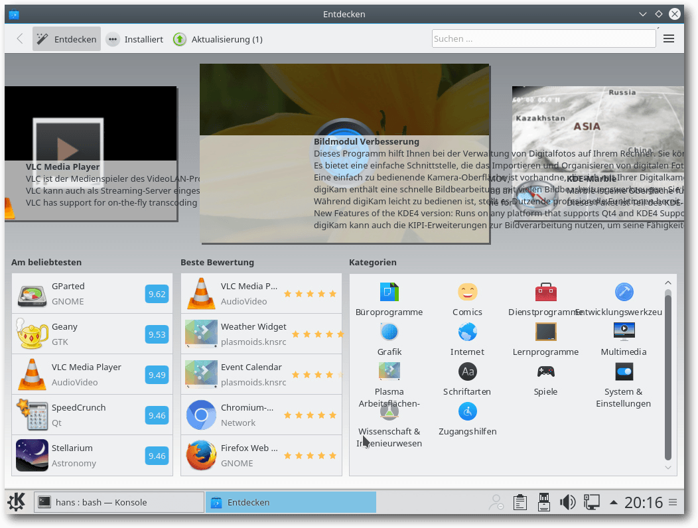
Software Entdecken, früher Muon-Discover.
Wie bisher immer behält Kubuntu weitgehend die Standardeinstellungen von KDE bei. Das bedeutet die Voreinstellung vieler Effekte, darunter viel Transparenz, was den Arbeitsfluss durchaus stören oder verlangsamen kann. Immerhin funktionieren die Effekte, im Gegensatz zu Unity, auch ohne Hardware-3-D-Beschleunigung mit akzeptabler Geschwindigkeit. Auch Kubuntu installiert Firefox als Standard-Browser, der genauso eingerichtet ist wie unter Unity. Als Musik-Player ist Amarok 2.8 vorinstalliert, wie schon seit Kubuntu 13.10. KDE PIM mit Kontact ist in Version 5.1.3 installiert und damit erstmals als Version, die unter Qt 5 und den KDE Frameworks (5.18) läuft. Außerdem ist LibreOffice vorhanden. Weitere Anwendungen muss man aus den Repositories nachinstallieren, wenn man sie braucht.
[1] http://www.pro-linux.de/artikel/2/1826/ubuntu-und-kubuntu-1604-lts.html
[2] http://www.freiesmagazin.de/freiesMagazin-2014-06
[3] http://www.pro-linux.de/news/1/23271/ubuntu-will-zfs-modul-direkt-bereitstellen.html
[4] https://de.wikipedia.org/wiki/Common_Development_and_Distribution_License
[5] https://de.wikipedia.org/wiki/GNU_General_Public_License
[6] http://www.pro-linux.de/news/1/23452/stallman-zfs-und-linux-unvereinbar.html
[7] http://www.pro-linux.de/news/1/23329/sflc-veröffentlicht-whitepaper-zur-zfs-problematik.html
[8] http://www.pro-linux.de/news/1/23294/sfc-hält-auslieferung-von-binären-zfs-modulen-für-gpl-verletzung.html
[9] http://blog.dustinkirkland.com/2016/02/zfs-licensing-and-linux.html
[10] https://wiki.ubuntu.com/XenialXerus/ReleaseNotes
[11] http://www.pro-linux.de/news/1/23462/snap-als-neues-paketformat-in-ubuntu-1604-lts-xenial-xerus.html
[12] https://insights.ubuntu.com/2016/04/20/canonical-unveils-6th-lts-release-of-ubuntu-with-16-04/
[13] https://kubuntu.org/news/kubuntu-16-04-lts-release-anouncement
[14] https://wiki.ubuntu.com/XenialXerus/ReleaseNotes/Lubuntu
[15] https://wiki.ubuntu.com/XenialXerus/ReleaseNotes/UbuntuGNOME
[16] https://wiki.ubuntu.com/XenialXerus/ReleaseNotes/UbuntuKylin
[17] https://ubuntu-mate.org/blog/ubuntu-mate-xenial-final-release/
[18] https://ubuntu-mate.org/ubuntu-mate-1604-presskit/
[19] https://wiki.ubuntu.com/XenialXerus/ReleaseNotes/UbuntuStudio
[20] https://xubuntu.org/news/xubuntu-16-04-release
[21] http://www.freiesmagazin.de/freiesMagazin-2015-12
[22] https://wiki.debian.org/PepperFlashPlayer
[23] http://www.pro-linux.de/news/1/23489/ubuntu-lts-viele-sicherheitslücken-ungepatcht.html
Beitrag teilen Beitrag kommentieren
Zum Inhaltsverzeichnis
[1] http://permalink.gmane.org/gmane.linux.kernel/2235519
[2] https://de.wikipedia.org/wiki/Universally_Unique_Identifier
[3] https://lkml.org/lkml/2016/6/12/124
[4] https://lkml.org/lkml/2016/6/20/5
[5] https://de.wikipedia.org/wiki/Open_Multimedia_Application_Platform
[6] https://lkml.org/lkml/2016/6/26/350
[7] https://de.wikipedia.org/wiki/AMD_PowerPlay
[8] https://www.amd.com/de-de/innovations/software-technologies/radeon-polaris
[9] http://heise.de/-3223783
[10] http://www.heise.de/ct/entdecken/?redautor=Thorsten+Leemhuis
[11] http://article.gmane.org/gmane.linux.kernel/2233992
[12] https://lkml.org/lkml/2016/6/26/195
[13] https://bugzilla.kernel.org/
Beitrag teilen Beitrag kommentieren
Zum Inhaltsverzeichnis
„Tomb Raider“ im neuen Gewand.
In Deckung gehen ist besser als ein Frontalangriff.
In geskripteten Aktionen wird es oftmals repetitiv.
In das abgestürzte Flugzeug kann man klettern.
Rutschpartie.
Auch mit Pfeil und Bogen kann Lara umgehen.
[1] https://www.feralinteractive.com/de/mac-games/tombraider/
[2] http://www.pro-linux.de/artikel/2/1830/tomb-raider.html
Beitrag teilen Beitrag kommentieren
Zum Inhaltsverzeichnis
Erklärung zur Funktion, die man soeben aufgerufen hat, in diesem Fall über die Tastenkombination „Strg“ + „h“ „k“.
Globale Tastenbelegungen, das heißt Zuweisungen, die in allen Buffern unabhängig vom gerade aktiven Major-Mode gelten sollen, lassen sich am einfachsten konfigurieren. In Emacs-Lisp werden wie in allen Lisp-Sprachen zum Aufrufen von Funktionen immer einige Klammern benötigt. Daran gewöhnt man sich aber nach einiger Zeit:
[1] http://www.freiesmagazin.de/freiesMagazin-2016-04
[2] http://emacs.stackexchange.com/a/654
[3] http://stackoverflow.com/a/34559019
[4] http://earlcolour.deviantart.com/art/emacs-user-at-work-195326745
[5] https://www.emacswiki.org/emacs/EmacsKeyNotation
[6] https://www.masteringemacs.org/article/mastering-key-bindings-emacs
[7] http://endlessparentheses.com/define-context-aware-keys-in-emacs.html
[8] http://stackoverflow.com/a/683575
[9] http://stackoverflow.com/a/5340797
[10] http://oremacs.com/2014/12/31/keymap-arms-race/
[11] https://www.gnu.org/software/emacs/manual/html_node/elisp/Keymaps.html
Beitrag teilen Beitrag kommentieren
Zum Inhaltsverzeichnis
Das Bearbeiten-Menü stellt verschiedene Auswahl- und Markierungsmöglichkeiten zur Verfügung.
In der Praxis kommt es häufig vor, dass man Markierungen erweitern oder einschränken möchte. Für die Größenänderung verwendet man die Tastenkombinationen „Umschalt“ + „Pfeil links“ und „Umschalt“ + „Pfeil rechts“, „Umschalt“ + „Pos1“ (oder „Umschalt“ + „J“) und „Umschalt“ + „Ende“ (oder „Umschalt“ + „K“). Man kann die Spurbereiche natürlich auch mithilfe der Maus vergrößern bzw. verkleinern. Um einen Bearbeitungsschritt, einen Effekt oder eine Analysefunktion auf mehrere Spuren anwenden zu können, muss man die Spuren markieren. Dazu markiert man zunächst die erste gewünschte Spur. Dann klickt man bei gedrückt gehaltener „Umschalt“-Taste in einen leeren Bereich des Spurkopfs der weiteren Tonspuren – fertig. Um ein gesamtes Projekt zu markieren, führt man den Menübefehl „Bearbeiten -> Auswählen -> Alles“ bzw. die Tastenkombination „Strg“ + „A“ aus.
Das Kopieren eines markierten Bereichs in eine neue Tonspur.
Ein Beispiel für die Wiedergabe ab dem Mauszeiger bis zur Markierung.
Mit dieser Vorgehensweise kann man einen Bereich einfach markieren und abhören, ohne die Wiedergabe komplett von Anfang an zu starten. Das ist nicht nur beim Beschneiden von Audiomaterial hilfreich, sondern auch bei jedem anderen Bearbeitungsvorgang. Gerade bei längeren Tonspuren muss man so nicht immer alles von Anfang an hören, bis man die gewünschte Stelle gefunden hat: Man spult einfach vor, markiert die kurze Passage und hört sie ab, spult weiter vor oder wieder zurück – ganz nach Bedarf. Man kann auf diese Weise nicht nur eine einzelne Spur, sondern auch mehrere übereinanderliegende Spuren abhören. Dazu muss man lediglich die Markierung über mehrere Spuren anlegen. Das Abhören eines Bereichs geht einfacher: die Taste „1“ betätigen, um 1 Sekunde abzuspielen. Natürlich will man vor der tatsächlichen Anwendung eines Schnitts nicht nur wissen, wie sich der Schnittbereich anhört, sondern man will auch wissen, wie sich das Dokument ohne den auszuschneidenden Bereich anhört. Audacity stellt hierfür eine Vorkontrolle zur Verfügung, mit denen man das Ergebnis anhören können, bevor man den Schnitt endgültig durchführt. So kann man vorab prüfen, wie sich das Ergebnis anhören würde. Ist man mit dem Ergebnis zufrieden oder hat man den Eindruck, dass man noch die eine oder andere Korrektur durchführen sollte, arbeitet man solange nach, bis man mit dem Ergebnis zufrieden sind. Die Vorgehensweise ist dabei viel einfacher, als man vermuten würde. Man markiert zunächst einen Bereich der Tonspur und betätigt die Taste „C“ auf der Tastatur. Mit dieser Tastenfunktion führt man die Funktion „Schnitt vorhören“ aus. Diese Funktion ist nur über die Tastatur erreichbar. Wenn man die Cursor-Markierung am Bildschirm verfolgt, kann man den Sprung über die markierte Stelle verfolgen. Wichtig bei der Ausführung der „Schnitt vorhören“-Funktion ist, dass man auf der Tastatur das kleine „c“ verwenden. Die „Umschalt“-Taste, die die Großschreibung aktiviert, darf also nicht betätigt sein. Die Tastenkombination „Umschalt“ + „C“ bewirkt vielmehr, dass die aktuelle Spur geschlossen wird. Beim „Schnitt vorhören“ spielt Audacity eine Sekunde vor der linken Schnittmarke und eine Sekunde nach der rechten Schnittmarke ab. Konkret bekommt man also 2 Sekunden der Tonspur zu hören. Mit dieser Funktion kann man genau in die Spur hineinhören und den beabsichtigten Schnitt kontrollieren, etwa ob sich der Schnitt sauber anhört oder ob der Schnitt an dieser Stelle überhaupt sinnvoll ist. Man kann die Länge des Vorlaufs und des Nachlaufs in den Audacity-Einstellungen an die individuellen Bedürfnisse anpassen. Dazu führt man den Befehl „Bearbeiten -> Einstellungen“ aus und öffnet die Kategorie „Wiedergabe“. Unter „Schnitt vorhören“ („c“) gibt man die Sekundenwerte für das Vorhören vor und nach der Auswahl an.
[1] http://freiesmagazin.de/freiesMagazin-2016-06
Beitrag teilen Beitrag kommentieren
Zum Inhaltsverzeichnis
geschickt werden. Die Kommentare werden bis zum Ende der
Verlosung nicht freigeschaltet. Das Buch wird unter allen
Einsendern, die die Frage richtig beantworten konnten, verlost.
Links
[1] https://www.rheinwerk-verlag.de/linux-mint_3768/
Beitrag teilen Beitrag kommentieren
Zum Inhaltsverzeichnis
zur Verfügung - wir freuen uns über Lob,
Kritik und Anregungen zum Magazin.
An dieser Stelle möchten wir alle Leser ausdrücklich ermuntern,
uns auch zu schreiben, was nicht so gut gefällt. Wir bekommen
sehr viel Lob (was uns natürlich freut), aber vor allem durch
Kritik und neue Ideen können wir uns verbessern.
Polynomial-C (Kommentar) -> An Polynomial-C: Könntest Du das etwas detaillierter ausführen? Dies ließe sich dann in einer späteren Ausgabe unterbringen, quasi als Gentoo-Update. Müsste jetzt kein vollständiger Artikel sein, mehr so etwas aus der Kategorie „Hacks und How-Tos“. Etwa so: „UPDATE: Repositories mit Overlay-Paketen unter Gentoo einrichten“. Einfach eine kurze Beschreibung, wie Du das [Verzeichnis] repos.conf bearbeitest bzw. wie layman und eix mit Overlay-Paketen funktionieren, eventuelle Unterschiede und Schwierigkeiten, die auftreten. Wäre echt eine Bereicherung, Leute, die speziell mit Gentoo nichts zu tun hatten, sind sicher für jeden Tip dankbar. An die Redaktion: Wenn die Redaktion nichts dagegen hat, wäre eine solche Kategorie doch um umzusetzen, oder? Wären, wie erwähnt, keine vollwertigen Artikel, aber mit Verlinkung zum Originalartikel. Die „Hemmschwelle“ etwas beizutragen wäre vielleicht auch geringer, Überschrift und Inhalt, das war's. Nachbearbeitung würdet Ihr übernehmen, nach Schema F. Wertvolle Ergänzungen gehen sonst leider womöglich unter, gerade wenn jemand aus eigener Praxis etwas beisteuern kann. Bringt ein wenig mehr „original content“, wenn Leute etwas Längeres beizutragen haben, rege Beteiligung vorausgesetzt. Spiesst sich auch nicht mit der „Leserbrief-Ecke“, weil solche Updates/Kurzanleitungen eben ausführlicher als typische Kommentare wären. Ausserdem stehen die Kommentare am Ende der Ausgabe – eine „Update“-Kategorie könnte gleich nach dem Editorial der neuen Ausgabe präsentiert werden, was ja wünschenswert erscheint. Wäre dies diskussionswürdig?
Random (Kommentar) <- Wir haben absolut nichts dagegen, und vieles von dem ließe sich mit den „Kurztipps“ realisieren, die es bereits gibt, siehe z.B. „Kurztipp: Unerwünschte grep-Ausgaben vermeiden“ freiesMagazin 02/2016 [3]. Je nach Länge des Beitrags ließe sich so etwas aber auch gut in den Leserbriefen unterbringen. Wir heißen jeden Beitrag, der thematisch zu uns passt, explizit willkommen, ob das ein Leserbrief, ein Kurztipp oder ein ausgewachsener Artikel ist.
Kai Welke Links
[1] http://www.freiesmagazin.de/freiesMagazin-2016-06
[2] https://wiki.gentoo.org/wiki/Overlay
[3] http://www.freiesmagazin.de/freiesMagazin-2016-02
Die Redaktion behält sich vor, Leserbriefe gegebenenfalls zu kürzen. Redaktionelle Ergänzungen finden sich in eckigen Klammern. Beitrag teilen Beitrag kommentieren
Zum Inhaltsverzeichnis
(Alle Angaben ohne Gewähr!)
Sie kennen eine Linux-Messe, welche noch nicht auf der Liste zu
finden ist? Dann schreiben Sie eine E-Mail mit den Informationen zu
Datum und Ort an .
Zum Inhaltsverzeichnis
Zum Inhaltsverzeichnis
Erscheinungsdatum: 3. Juli 2016
Dieses Magazin wurde mit LaTeX erstellt. Mit vollem Namen
gekennzeichnete Beiträge geben nicht notwendigerweise die Meinung
der Redaktion wieder. Wenn Sie freiesMagazin ausdrucken möchten, dann
denken Sie bitte an die Umwelt und drucken Sie nur im Notfall. Die
Bäume werden es Ihnen danken. ;-)
Soweit nicht anders angegeben, stehen alle Artikel, Beiträge und Bilder in freiesMagazin unter der Creative-Commons-Lizenz CC-BY-SA 4.0 International. Das Copyright liegt beim jeweiligen Autor. Die Kommentar- und Empfehlen-Icons wurden von Maren Hachmann erstellt und unterliegen ebenfalls der Creative-Commons-Lizenz CC-BY-SA 4.0 International. freiesMagazin unterliegt als Gesamtwerk der Creative-Commons-Lizenz CC-BY-SA 4.0 Unported mit Ausnahme der Inhalte, die unter einer anderen Lizenz hierin veröffentlicht werden. Das Copyright liegt bei Dominik Wagenführ. Es wird erlaubt, das Werk/die Werke unter den Bestimmungen der Creative-Commons-Lizenz zu kopieren, zu verteilen und/oder zu modifizieren. Die xkcd-Comics stehen separat unter der Creative-Commons-Lizenz CC-BY-NC 2.5 Generic. Das Copyright liegt bei Randall Munroe.
File translated from TEX by TTH, version 4.08.
On 3 Jul 2016, 11:13.
freiesMagazin Juli 2016
(ISSN 1867-7991)Themen dieser Ausgabe sind u. a.
Beim Neustart des Spieleklassikers „Tomb Raider“ muss eine junge Archäologin über sich hinauswachsen, zahlreiche Gefahren überstehen und einer Sekte das Handwerk legen. Das neue „Tomb Raider“ hat nicht viel mit der alten Serie gemein, denn Action, Drama, vor allem aber eine allgegenwärtige Gewalt dominieren. Spaß macht's trotzdem – jetzt auch unter Linux. (weiterlesen)Im Artikel „Emacs – Moderne Antike“ wurden bereits einige Vorzüge von Emacs vorgestellt. Ein besonderes Merkmal von Emacs ist, dass es sich um einen Editor handelt der in einen Interpreter eingebettet ist. Dies lässt es zu Emacs sogar während seiner Ausführung beinahe nach Belieben anzupassen. Um dieses Potential nutzen zu können, ist es wichtig sich mit den Grundzügen der programminternen Sprache Emacs Lisp, sowie mit den teilweise ungewohnten Begriffen und Konzepten von Emacs vertraut zu machen. Das Ändern von Tastenbelegungen ist ein guter Einstieg sich darin zu üben und Thema dieses Artikels. (weiterlesen)
Zum Inhaltsverzeichnis
Inhalt
Linux allgemeinUbuntu und Kubuntu 16.04 LTS
Der Juni im Kernelrückblick
Software
Tomb Raider – Neugeburt einer Heldin
Vortasten mit Emacs-Lisp
Audacity 2.1 – Teil II
Community
Rezension: Linux Mint – der praktische Einstieg
Magazin
Editorial
Leserbriefe
Veranstaltungen
Vorschau
Konventionen
Impressum
Zum Inhaltsverzeichnis
Editorial
Auswertung der Umfrage
Wie aus der Nachricht auf unserer Webseite hervorging [1], erreichen die Redaktion ungefähr 3 bis 4 Anfragen pro Jahr, ob wir nicht ein E-Mail-Abonnement einrichten können. Bisher ist die bequemste Option der RSS-Feed [2], oder die Benachrichtigungen in einigen sozialen Netzwerken, wie z.B. Twitter [3], Facebook [4], oder Google+ [5]. Wir haben daher beschlossen, einmal grundsätzlich den Bedarf an einer solchen Funktion zu ermitteln und haben eine Umfrage gestartet. Die Gesamtzahl der Stimmen fiel mit 420 sehr hoch aus für unser Magazin. Wir möchten uns an dieser Stelle bei allen, die sich an der Umfrage beteiligt haben, bedanken. Das Ergebnis dieser Umfrage fiel recht eindeutig aus, was vielleicht auch ein bisschen zu erwarten war. Eine Mehrheit von 80 % benötigen demnach kein E-Mail-Abonnement. Wir nehmen aber auch zur Kenntnis, dass 20 % der Teilnehmer durchaus etwas damit anfangen können. Wenn man das mal in einen Vergleich setzen möchte, etwa 12 % der Leser haben in den vergangenen drei Monaten die EPUB-Ausgaben heruntergeladen. Natürlich ist der Vergleich nicht zwingend stichhaltig, die Downloadzahlen spiegeln nicht die tatsächliche Leserzahl wider und Mehrfachteilnahmen an der Umfrage sind aus technischen Gründen ebenso nicht zu vermeiden. Vorerst werden wir somit diesen Dienst nicht über unsere Webseite direkt anbieten. Falls aber der eine oder andere der 20 %, die einen solchen Dienst gerne genutzt hätten, für sich eine Lösung findet, würden wir und die anderen Leser sich sicher über einen Bericht darüber freuen.Aus Tradition – Sommerloch
Es gehört einfach dazu. Blättert man durch die Editorials der Juliausgaben vergangener Jahre, stößt man immer wieder auf das Wort „Sommerloch“. Gott sei Dank sind nicht alle Autoren in eben Erwähntes gefallen, so dass wir mit Ach und Krach eine Ausgabe zu Stande bringen konnten. Damit das auch so bleibt: Gönnen Sie sich mal etwas besonderes diesen Sommer! Wie wäre es zum Beispiel mit dem befriedigenden Gefühl, seine eigenen Worte veröffentlicht zu sehen? Wir haben eine lange Wunschliste mit Artikeln, die oft nachgefragt werden [6]. Ihr Spezialgebiet nicht dabei? Schreiben Sie uns eine E-Mail an:[1] http://www.freiesmagazin.de/20160610-separate-e-mail-abonnementen-funktion
[2] http://www.freiesmagazin.de/rss.xml
[3] https://twitter.com/freiesmaga_open
[4] https://www.facebook.com/freiesMagazin
[5] https://plus.google.com/u/0/113071049781738007718
[6] http://www.freiesmagazin.de/artikelwuensche
Beitrag teilen Beitrag kommentieren
Zum Inhaltsverzeichnis
Ubuntu und Kubuntu 16.04 LTS
von Hans-Joachim Baader Dieser Artikel beleuchtet die Neuerungen von Ubuntu 16.04 LTS „Xenial Xerus“, vor allem in den beiden wichtigsten Desktop-Ausgaben mit Unity und KDE. Redaktioneller Hinweis: Der Artikel „Ubuntu und Kubuntu 16.04 LTS“ erschien zuvor bei Pro-Linux [1].Vorwort
Ubuntu 16.04 LTS „Xenial Xerus“ wurde, wie immer genau im Zeitplan, am 21. April 2016 veröffentlicht. Ubuntu, Ubuntu Kylin, Ubuntu Cloud, Ubuntu Core sowie die Server-Variante erhalten als LTS-Versionen wieder fünf Jahre Unterstützung, die anderen Varianten drei Jahre. Damit tritt „Xenial Xerus“ die Nachfolge des jetzt zwei Jahre alten „Trusty Tahr“ an (siehe freiesMagazin 06/2014 [2]). Ein Update bestehender Trusty-Installationen soll aber erst nach dem ersten Wartungsupdate 16.04.1 angeboten werden. Von Hand kann man dieses Update natürlich bereits jetzt vornehmen. Im Verlauf der Entwicklung von „Xenial Xerus“ wurde eine Entscheidung von Canonical verlautbart, die innerhalb der Gemeinschaft kontrovers aufgenommen wurde: Die Bereitstellung von Binärdateien des ZFS-Kernelmoduls [3]. Für die Anwender stellt diese Maßnahme eine Erleichterung dar, da sie das Modul nicht selbst kompilieren müssen. Das altbekannte Problem mit ZFS ist jedoch, dass der Code unter der CDDL [4] steht, Linux hingegen unter der GPL [5]. Obwohl beide Lizenzen geistesverwandt sind, sind ihre Bestimmungen nicht miteinander vereinbar. Das ist zumindest die Auffassung der Free Software Foundation (FSF) und Richard Stallman [6] sowie weiterer Experten der GPL-Lizenzierung, des SFLC [7] und der SFC [8]. Dem entgegen steht eine Rechtsauskunft, die Canonical zu der Sache eingeholt hat [9]. Eine Klärung der Sache würde wohl erst ein Gerichtsurteil bringen – wobei die Richter in unterschiedlichen Instanzen durchaus unterschiedlich entscheiden könnten. Ob es jemals dazu kommt, ist allerdings noch offen. Zwar scheint durch die Binärmodule niemandem ein Schaden zu entstehen, doch bei der FSF dürfte es durchaus Überlegungen geben, dass man es nicht hinnehmen kann, wenn Canonical einen Präzendenzfall einer Lizenzverletzung schaffen würde, die nicht verfolgt wird. Nicht zuletzt steht im Hintergrund auch noch Oracle als Inhaber der Rechte an ZFS, und niemand weiß, wie Oracle zu der Sache steht. Auch aus diesem Grund würden es FSF, SFLC und SFC vorziehen, wenn keine Klage notwendig wäre. Sie appellieren schon länger an Oracle, den ZFS-Code einfach unter der GPL zu lizenzieren. Bis das geschieht, ist der Fall ZFS nicht ausgestanden und könnte für Canonical durchaus noch Konsequenzen haben. Wie sich nun herausstellt, ist ZFS in Ubuntu 16.04 LTS tatsächlich als Binärmodul vorhanden. Die zugehörigen Werkzeuge sind jedoch nicht vorinstalliert, sondern müssen aus dem Archiv bezogen werden. Auch wird ZFS bei der Installation nicht als Option angeboten. Eine Nutzung von ZFS für die Rootpartition ist somit in Ubuntu 16.04 LTS (noch) nicht vorgesehen. 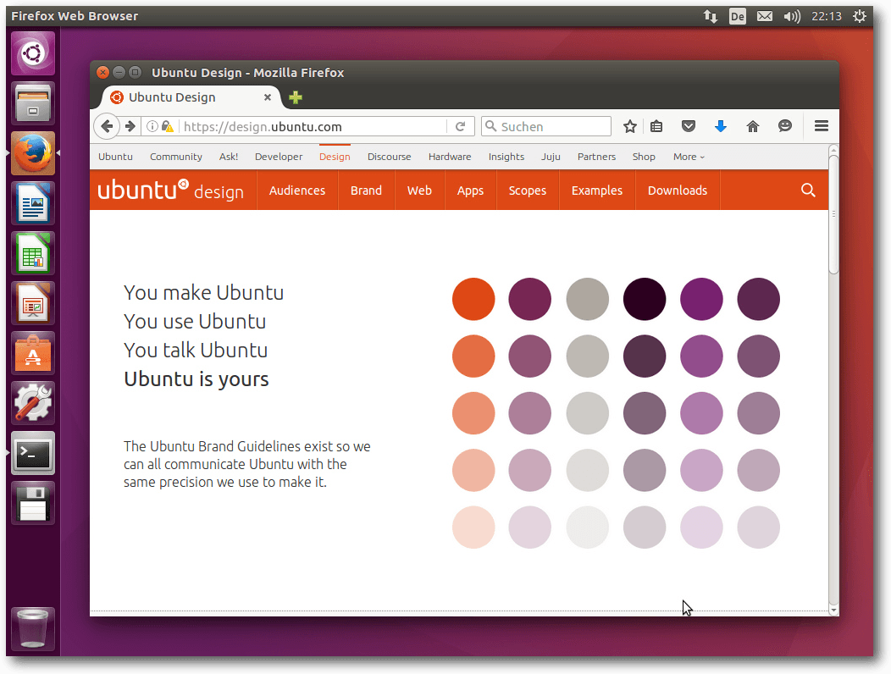Ubuntu 16.04 LTS.
Installation
Die Installation von Ubuntu ist wie immer kein Problem, denn sie geht schneller und einfacher vonstatten als bei den meisten anderen Distributionen. Für Testzwecke ist extrem schnell ein lauffähiges System installiert, weil man hier größtenteils die Standardeinstellungen verwenden kann. Für ein dauerhaft eingesetztes System lohnt es sich allerdings, mehr Aufwand zu betreiben und von den erweiterten Optionen Gebrauch zu machen, die weitgehend alle nur denkbaren Bedürfnisse abdecken. Die einfachste Installation bietet ein Live-System, das als ISO-Image zum Download bereitsteht. Dieses „Desktop-Image“ ist rund 1,5 GB groß und kann auf DVD oder einem USB-Medium verwendet werden. Gegenüber der Vorversion ist es um satte 0,4 GB angewachsen. Die ISO von Kubuntu ist um 0,2 GB gewachsen und mit etwas über 1,5 GB geringfügig größer als Ubuntu. Gegenüber der Vorversion hat sich an der Installation nichts Merkliches geändert. Das Installationsprogramm Ubiquity bietet ähnlich wie der Debian-Installer oder Anaconda von Fedora alle Möglichkeiten an, die Festplatten zu partitionieren und das System darauf zu installieren. Die gesamte Festplatte oder einzelne Partitionen können verschlüsselt werden, und LVM wird unterstützt, wenn man die automatische Partitionierung auswählt. Merkwürdigerweise fehlt LVM, wenn man manuell partitionieren will. Auch ZFS wird zum Installationszeitpunkt noch nicht unterstützt. Das gilt auch, wenn man die Installation im Expertenmodus startet, was nur über eine Option des Bootloaders möglich ist. Unklar ist dabei aber, ob der Expertenmodus überhaupt noch eine Auswirkung hat. 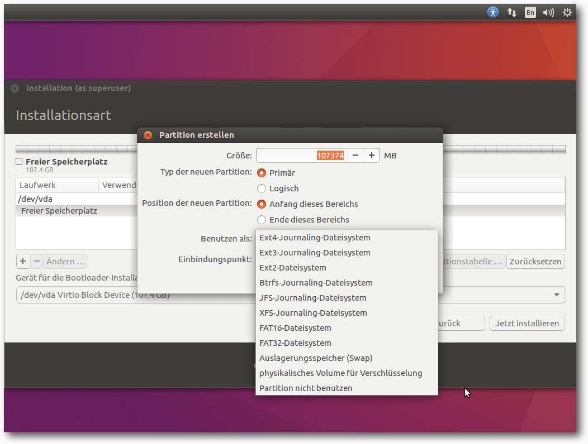Kein ZFS während der Installation.
Nachdem die Partitionierung definiert ist, beginnt im Hintergrund bereits die Installation, die in weniger als einer halben Stunde abgeschlossen ist. Währenddessen wird man nach weiteren Parametern gefragt. Mit Zeitzone, Tastaturbelegung, Name und Passwort ist dieser Part auch schon abgeschlossen, weitere Angaben werden nicht benötigt. Für die Installation der Desktop-Version erwiesen sich im Test 1 GB RAM nicht mehr als ausreichend. Zumindest bei Kubuntu kam es zu einem Abbruch der Installation wegen Speichermangel. Der Grund ist sicher der exorbitante Speicherbedarf von Umgebungen wie GNOME, KDE und Unity, der deshalb zuschlägt, weil die Installation von einem Live-System aus durchgeführt wird. Es sind also 1,5 oder 2 GB Speicher nötig, um das System zu installieren. Auch für den späteren Betrieb empfiehlt sich diese Menge oder noch mehr, um flüssig arbeiten zu können. Eine große Einschränkung ist das nicht, da kaum ein x86-Rechner in den letzten zehn Jahren mit weniger RAM gebaut worden sein dürfte. Mit alternativen Installationsmethoden genügt auch weniger RAM immer noch.
Ausstattung
Bevor auf die Desktopumgebungen Unity und KDE eingegangen wird, wird zuerst ein Blick darauf geworfen, aus welchen Versionen von Software sich das Grundsystem zusammensetzt und was sich bei den anderen Ubuntu-Varianten getan hat. Das meiste davon kann hier jedoch nur kurz beschrieben werden. Ubuntu 16.04 LTS [10] ist erstmals auf der S390x-Architektur von IBM lauffähig. Als Kernel wird Linux 4.4 eingesetzt. Dazu kommen zahlreiche aktualisierte Softwarepakete wie Python 3.5 (Python 2 wird nur noch auf dem Desktop vorinstalliert), Go 1.6, OpenSSH 7.2p2, glibc 2.23 und GCC 5.3.1. Diese GCC-Version ist keine offiziell veröffentlichte, vielmehr handelt es sich um GCC 5.3 vom Dezember 2015 mit einigen Korrekturen. Auch einige Bestandteile von GCC 6 sind installiert, doch GCC 6 wurde erst eine Woche nach Ubuntu offiziell freigegeben. Eine wichtige Neuerung ist das neue Paketformat „Snap“ [11], das gemeinsam mit dem DEB-Format existieren kann. Snap-Pakete enthalten Anwendungen mitsamt dem größten Teil ihrer Abhängigkeiten, was ihre Aktualisierung unabhängig vom Rest des Systems ermöglicht. Momentan stehen zumindest in den vorkonfigurierten Repositorys nur wenige Snap-Pakete zur Verfügung. Davon dürfte tor-middle-relay das interessanteste sein. Installierte Snap-Pakete landen unter /snap. Unter /snap/ubuntu-core wird ein minimales Ubuntu installiert, das den Snap-Anwendungen vermutlich als Root-Dateisystem dient. Insgesamt ist es wohl noch zu früh, sich eingehend mit Snap zu beschäftigen. Die Server-Ausgabe [12] bietet sich mit LXC 2.0 und LXD 2.0 als Host für Container an. Zusätzlich wird auf OpenStack in der neuesten Version, dazu auf Juju 2.0 und MAAS 2.0 gesetzt. Das Dateisystem ZFS wird mitgeliefert und erstmals ist das verteilte Dateisystem CephFS mit dabei. Damit will sich Ubuntu als Basis für private Clouds und Speichersysteme in Unternehmen aller Größen anbieten. Neben Servern mit x86- oder Power8-Basis ist Ubuntu Server aber auch für Kleinstsysteme wie den Raspberry Pi verfügbar. Weitere offizielle Varianten von Ubuntu werden nicht von Canonical, sondern von der Gemeinschaft unterstützt. Dazu gehört auch Kubuntu [13], auf das später noch eingegangen wird. Lubuntu [14] installiert LXDE und widmete sich in Version 16.04 überwiegend Korrekturen, da geplant ist, später auf LXQt umzustellen. Ubuntu GNOME [15] aktualisierte GNOME auf Version 3.18. GNOME Software hat das Ubuntu Software Center ersetzt. Kalender und Logs werden installiert, die Entwicklungsumgebung Builder ist in den Archiven zu finden. X.org kann als unprivilegierter Benutzer laufen, alternativ gibt es eine experimentelle Wayland-Sitzung zu erkunden. Das ebenfalls GNOME-basierte Ubuntu Kylin [16], das an chinesische Benutzer angepasst ist, erhielt neben Aktualisierungen auch Korrekturen bezüglich der Internationalisierung. In Ubuntu Mate [17] wurde der gleichnamige Desktop auf Version 1.12 aktualisiert. Die Änderungen werden in einer separaten Mitteilung [18] näher vorgestellt. Ubuntu Studio [19] setzt auf einen Xfce-Desktop mit Whisker-Menü und ffmpeg statt libav (wie auch Ubuntu generell). Einige Multimedia-Pakete kamen hinzu, andere wurden aktualisiert. Es findet sich jetzt nur noch eine Version von Ardour in den Archiven. Xubuntu [20], die Xfce-Ausgabe, hat hingegen kaum Änderungen zu vermelden. Es wurden einige Hintergrundbilder aus der Gemeinschaft hinzugefügt und das Ubuntu Software Center wurde wie bei GNOME durch GNOME Software ersetzt. Ubuntu startet ziemlich schnell, wie schon in Version 15.10. Es setzt, anders als Kubuntu, eine Hardware-3-D-Beschleunigung voraus, die bei Grafikkarten, die das nicht bieten, durch llvmpipe emuliert wird. Bei einer ausreichend schnellen CPU ist das Verfahren von der Geschwindigkeit immer noch gerade so erträglich, bei zwei oder mehr CPUs ist es mittlerweile ganz brauchbar, von sehr grafikintensiven Anwendungen abgesehen. Das Grafiksystem ist bei X.org 7.7 geblieben, da es keine neue Version von X.org in der Zwischenzeit gab. Allerdings wurden einige Komponenten von X.org aktualisiert, darunter der X-Server 1.18.3, und Mesa 11.2.0. Unity 8 ist als Vorschau mit dabei. Auch mit den neuen Display-Servern Mir und Wayland kann man experimentieren, wenn man sie installiert. Ansonsten bringt Ubuntu 16.04 LTS auf dem Desktop in erster Linie Korrekturen. Viele Anwendungen erhielten mehr oder weniger große Verbesserungen durch neue Versionen. LibreOffice wird in Version 5.1.2 mitgeliefert. Chromium 49 und Firefox 45 sind unter den mitgelieferten Webbrowsern zu finden. Wie gewohnt hat Root keinen direkten Zugang zum System, sondern die Benutzer der Gruppe sudo können über das Kommando sudo Befehle als Root ausführen. Der Speicherverbrauch von Unity ist gegenüber der Vorversion wieder gestiegen, was aber auch an der virtuellen Maschine oder anderen Faktoren liegen könnte. Rund 680 MB benötigt die Umgebung allein, ohne dass irgendwelche produktive Software gestartet wurde. Über 240 MB davon entfallen auf Compiz. KDE benötigt in der Standardinstallation mit einem geöffneten Terminal-Fenster etwa 650 MB und damit ebenfalls noch mehr als zuvor. Die Messung des Speicherverbrauchs der Desktops kann jeweils nur ungefähre Werte ermitteln, die zudem in Abhängigkeit von der Hardware und anderen Faktoren schwanken. Aber als Anhaltspunkt sollten sie allemal genügen.Unity
Unity liegt jetzt in Version 7.4 vor. Die wenigen Änderungen gegenüber Version 7.3 sind nur schwer zu entdecken. Der Amazon-Button, der einen Browser mit einer Amazon-Shopping-App startet, ist immer noch im Starter vorhanden, lässt sich aber mit zwei Klicks entfernen. Die Suche dagegen, die früher in umstrittener Weise auch Internet und Online-Shops (Amazon) einbezog, ist jetzt standardmäßig auf den eigenen Rechner beschränkt. Man kann die Online-Suche immer noch in den Einstellungen aktivieren. Der Standard-Webbrowser in Ubuntu ist Firefox, die Standard-Büro-Suite LibreOffice. Für E-Mails ist Thunderbird 38.6, dessen Icon nicht in die Startleiste eingebunden ist, zuständig. Die sonstigen installierten Programme sind im Wesentlichen die Standard-Programme von Gnome, die zumindest grundlegend die häufigsten Aufgaben abdecken. In den meisten Fällen bieten sie gerade einmal Grundfunktionen, sodass man sich gerne nach leistungsfähigeren Programmen im Software-Center umsieht. Apropos: Das Software-Center ist nun ein komplett anderes. Zwar trägt es den Namen „Ubuntu Software Center“, es handelt sich dabei aber um das umbenannte GNOME Software-Center. Die Funktionalität ist nicht viel anders als zuvor, allenfalls etwas einfacher. Das Center bietet nach wie vor eine Fülle von zusätzlichen Applikationen, penibel in Kategorien unterteilt, und lädt durchaus zum Stöbern ein. Schnell werden selbst erfahrene Benutzer auf bisher unbekannte Programme stoßen, die sich als nützlich erweisen könnten. Selbst für Spezialgebiete ist Software paketiert. Allerdings ändert das nichts daran, dass es im Internet noch weitaus mehr Software gibt, als die Distributionen je bereitstellen können. Wer also im Software-Center nicht fündig wird, sollte ergänzend eine Web-Suche starten. 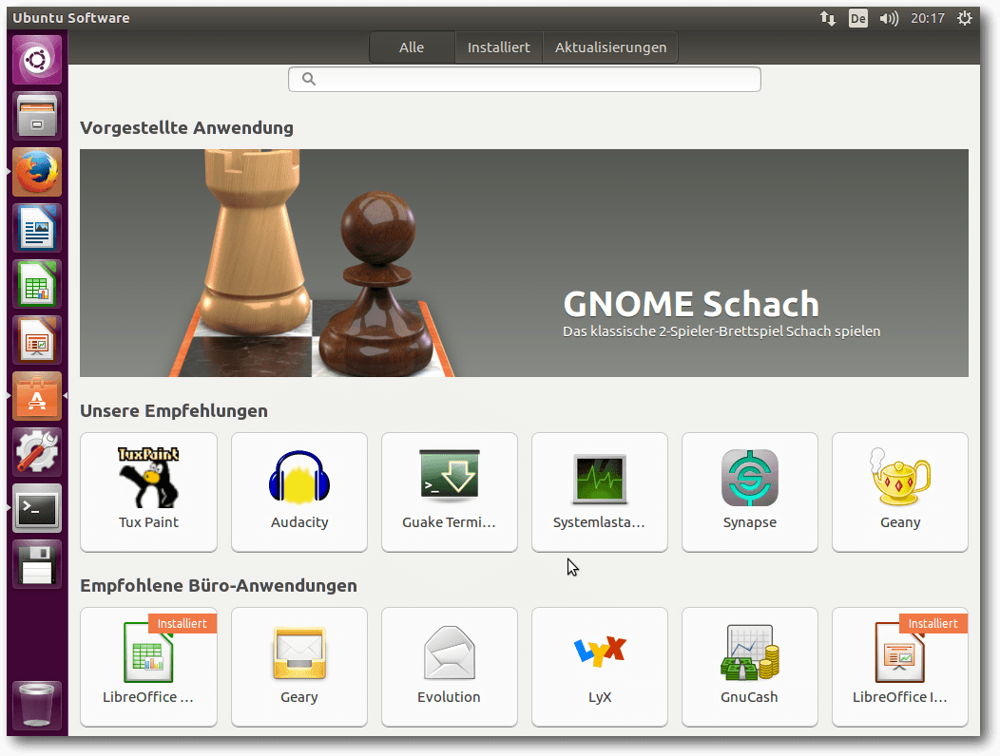Ubuntu Software, ein umbenanntes GNOME Software.
Ubuntus Plan für das Software Center war, Plug-ins zu entwickeln, um eigene Bedürfnisse abzudecken. Offenbar wurde keines der Plug-ins rechtzeitig fertig, denn zu sehen ist von ihnen nichts. Alle Standard-Anwendungen verwenden jetzt nach Auskunft Webkit 2 anstelle des obsoleten Webkit, bei dem immer noch fraglich ist, ob alle bekannten Sicherheitslücken behoben sind. Der GNOME-Kalender ist nun standardmäßig installiert, das Messaging-, Telefonie- und Videotelefonieprogramm Empathy und das Brennprogramm Brasero dagegen nicht mehr.
KDE
Kubuntu 16.04 LTS setzt den Plasma-Desktop 5.5.5 und die KDE-Anwendungen in Version 15.12 ein. Es ist die erste Veröffentlichung des nunmehr von Ubuntu unabhängigen Entwicklerteams. Nach dem katastrophalen Eindruck, den Kubuntu 15.10 aufgrund von Speicherlecks und Fehlern hinterlassen hatte (siehe freiesMagazin 12/2015 [21]), soll die neue Version stabil und gereift sein. Der Speicherbedarf ist direkt nach dem Start 650 MB, nur geringfügig weniger als bei Unity. Dabei verschlingt allein MySQL 190 MB, viele weitere MB gehen auf das Konto von Akonadi, das etliche Prozesse startet. Ob man die alle haben will, sei dahingestellt, genau wie das Aussehen der Oberfläche. Letztere ist zumindest in weiten Grenzen konfigurierbar. 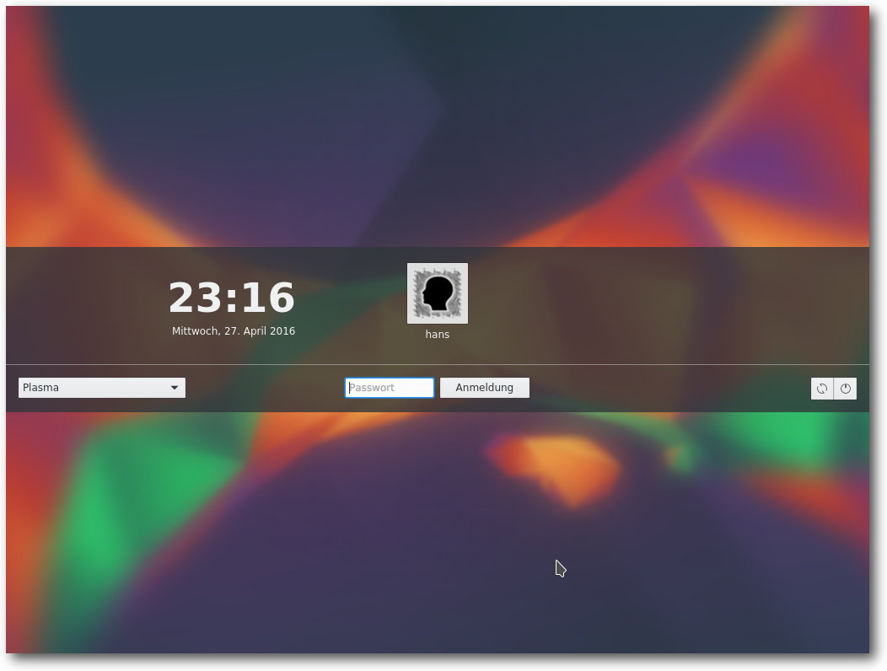Login-Bildschirm von Kubuntu.
Plasma 5.5 verhält sich in vielen Punkten genauso wie KDE 4, sodass der Umstieg nicht schwerfallen sollte. Bei den Anwendungen hat sich nicht so viel getan, dass man es extra aufzählen müsste. Bei im Prinzip identisch gebliebenem Verhalten kamen natürlich im Zuge der Entwicklung einige Verbesserungen und neue Funktionen hinzu. Die herausragendste Änderung ist das neue Software-Center „Plasma Discover“, das vor einem halben Jahr noch „Muon Discover“ hieß. Es hat seit der Umbenennung (auf Deutsch heißt es jetzt „Entdecken“) einige Funktionen hinzugewonnen und lässt sich auch zur Verwaltung der installierten Pakete und zur Installation der Updates einsetzen. Die installierte Version ist 5.6.2. 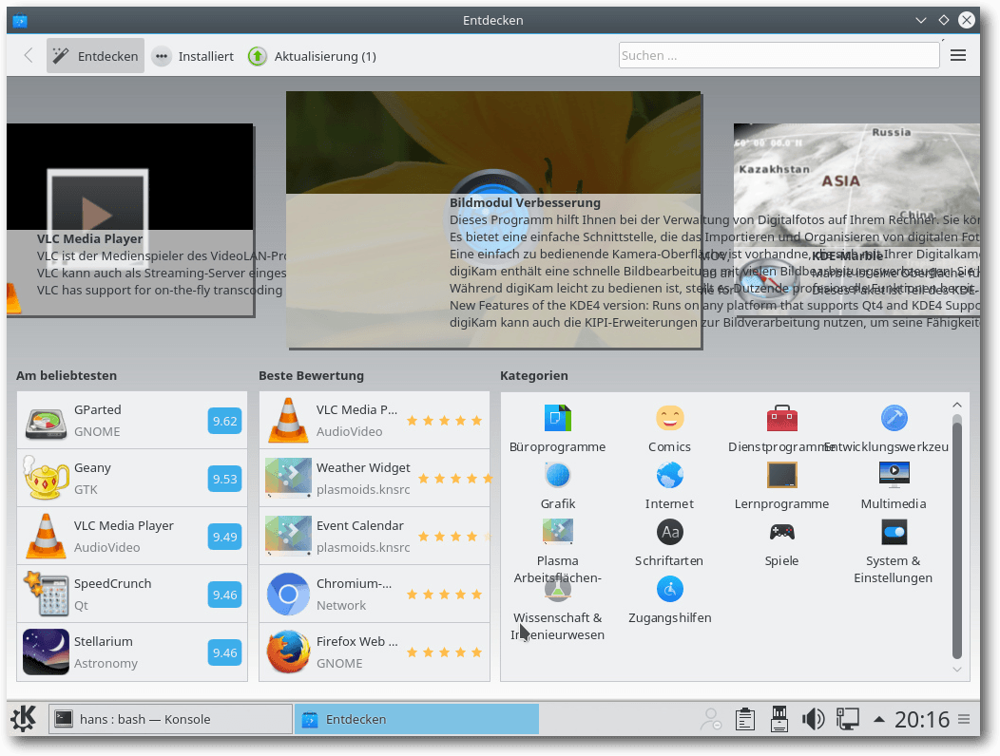
Software Entdecken, früher Muon-Discover.
Wie bisher immer behält Kubuntu weitgehend die Standardeinstellungen von KDE bei. Das bedeutet die Voreinstellung vieler Effekte, darunter viel Transparenz, was den Arbeitsfluss durchaus stören oder verlangsamen kann. Immerhin funktionieren die Effekte, im Gegensatz zu Unity, auch ohne Hardware-3-D-Beschleunigung mit akzeptabler Geschwindigkeit. Auch Kubuntu installiert Firefox als Standard-Browser, der genauso eingerichtet ist wie unter Unity. Als Musik-Player ist Amarok 2.8 vorinstalliert, wie schon seit Kubuntu 13.10. KDE PIM mit Kontact ist in Version 5.1.3 installiert und damit erstmals als Version, die unter Qt 5 und den KDE Frameworks (5.18) läuft. Außerdem ist LibreOffice vorhanden. Weitere Anwendungen muss man aus den Repositories nachinstallieren, wenn man sie braucht.
Multimedia im Browser und auf dem Desktop
Nicht viel Neues gibt es im Multimedia-Bereich. OpenH264 ist in Firefox als Plug-in vorinstalliert und aktiviert, um WebRTC zu ermöglichen. Der eigentliche Plug-in-Code wird offenbar beim ersten Start heruntergeladen. Diese Vorgehensweise hat ihre Ursache darin, dass Cisco, von dem der Code stammt, nur für das binäre Plug-in die angefallenen Patentlizenzen bezahlt hat. Der Quellcode des Moduls ist zwar unter der BSD-Lizenz verfügbar, allerdings wird dieser von der Patentlizenz nicht abgedeckt. Die vorinstallierte Firefox-Erweiterung Ubuntu Firefox Modifications ist bei Version 3.2 geblieben. Es ist die einzige vorinstallierte Erweiterung. Wie immer muss man zum Abspielen der meisten Video-Formate (und diverser Audio-Formate wie MP3) zuerst das passende Plug-in installieren. Die Software-Verwaltung weist jetzt darauf hin, dass einige dieser Plug-ins von Softwarepatenten belastet sein könnten, was aber zumindest Privatnutzern völlig egal sein kann. Wenn man ein zusätzliches Plug-in benötigt, wird dies unter Unity und GNOME von den jeweiligen Anwendungen in einer Dialogbox angezeigt. Diese sucht nach passenden GStreamer-Plug-ins, schlägt sie zur Installation vor und kann sie anschließend installieren. Das funktioniert korrekt, nach der Plug-in-Installation muss man allerdings die Player-Software neu starten. Auch Web-Videos funktionieren weitgehend. Die Ubuntu-Version von Firefox kann über GStreamer alles abspielen, wofür Plug-ins installiert sind, also auch Flash. Lediglich Webseiten, die explizit das Adobe-Flash-Plug-in verlangen, funktionieren so nicht. Das Flash-Plug-in gibt es für Firefox bzw. Iceweasel zwar noch, es wird aber bis auf Korrekturen von Sicherheitslücken nicht mehr gepflegt. Das größte Problem ist jedoch, dass Mozilla den Benutzern viele lästige Hürden in den Weg legt, wenn sie das Plug-in weiter nutzen wollen. Workarounds sind die Verwendung eines anderen Browsers wie Google Chrome oder Chromium mit dem von Google stammenden proprietären Pepperflash-Plug-in [22]. Andere Workarounds sind das Herunterladen der Videos, um sie in einem Player offline oder als Stream anzusehen, oder die Installation von Gnash, das jedoch keinen Erfolg garantiert. Unter KDE sieht es im Prinzip genauso aus, nur dass die Geschwindigkeit auch ohne 3-D-Hardware akzeptabel ist. Amarok ist der Standard-Audioplayer. Früher wurden auch unter KDE fehlende Plug-ins korrekt nachinstalliert oder waren bereits vorhanden. Das ist in 16.04 LTS wie schon in 15.10 nicht der Fall. Amarok und Dragonplayer funktionieren schlicht nicht, wenn die Plug-ins fehlen. Leider scheint auch jegliche Unterstützung für die Nachinstallation zu fehlen. Es bleibt nur die Installation von Hand, im Grunde die Pakete gstreamer1.0-plugins-ugly, gstreamer1.0-plugins-bad-videoparsers und gstreamer1.0-libav.Fazit
Canonical hat gut daran getan, in 16.04 LTS auf alles zu verzichten, was nicht stabil oder ausgereift ist. Das Resultat ist eine sehr stabile Distribution, die als Grundlage für das langfristige Arbeiten dienen kann. Sogar kontroverse Einstellungen wie die Online-Suche wurden zurückgenommen und einstellbar gemacht. Dafür sorgte Canonical gleich für neue Kontroversen, indem es Binärmodule von ZFS mitliefert. Diese Entscheidung dürfte noch Folgen haben. Im günstigsten Fall würde Oracle die Lizenzierung von ZFS auf die GPLv2 erweitern. Die Desktopumgebungen Unity und KDE machen einen guten Eindruck, was besonders bei KDE erwähnenswert ist, das in der letzten Version noch geradezu desaströs war. Bei beiden getesteten Umgebungen sowie auch bei GNOME ist der Speicherverbrauch exorbitant, aber ob man damit leben kann, entscheidet letztlich jeder selbst. Verbessern könnte Canonical die Sicherheitsupdates des Systems. Denn erst kürzlich wurde wieder darauf hingewiesen, dass nur das main-Repositorium volle Sicherheitsunterstützung für fünf Jahre erhält [23]. Das Gros der Bibliotheken und Anwendungen liegt aber im universe-Repository vor, und hier ist die Unterstützung lückenhaft. Das ist allerdings nichts Neues und auch keineswegs ein Geheimnis. Man kann Canonical gewiss nicht vorwerfen, bei der Sicherheit nichts zu tun – beispielsweise arbeiten Canonical-Entwickler daran, mehr Sicherheitsfunktionalität in den Kernel zu bekommen. Es wäre auch einmal interessant, zu sehen, wie viele Sicherheitslücken durch das aktivierte AppArmor bereits abgefangen werden, sodass sie nicht ausnutzbar sind. Auf lange Sicht sind solche Maßnahmen sogar sinnvoller als die Korrektur jedes einzelnen Fehlers in Anwendungen. Denn wenn eine Lücke in einer Anwendung erkannt und geschlossen wird, kann der Schaden bereits angerichtet sein, während andere Schutzmaßnahmen wie AppArmor bereits im Vorfeld wirken. Links[1] http://www.pro-linux.de/artikel/2/1826/ubuntu-und-kubuntu-1604-lts.html
[2] http://www.freiesmagazin.de/freiesMagazin-2014-06
[3] http://www.pro-linux.de/news/1/23271/ubuntu-will-zfs-modul-direkt-bereitstellen.html
[4] https://de.wikipedia.org/wiki/Common_Development_and_Distribution_License
[5] https://de.wikipedia.org/wiki/GNU_General_Public_License
[6] http://www.pro-linux.de/news/1/23452/stallman-zfs-und-linux-unvereinbar.html
[7] http://www.pro-linux.de/news/1/23329/sflc-veröffentlicht-whitepaper-zur-zfs-problematik.html
[8] http://www.pro-linux.de/news/1/23294/sfc-hält-auslieferung-von-binären-zfs-modulen-für-gpl-verletzung.html
[9] http://blog.dustinkirkland.com/2016/02/zfs-licensing-and-linux.html
[10] https://wiki.ubuntu.com/XenialXerus/ReleaseNotes
[11] http://www.pro-linux.de/news/1/23462/snap-als-neues-paketformat-in-ubuntu-1604-lts-xenial-xerus.html
[12] https://insights.ubuntu.com/2016/04/20/canonical-unveils-6th-lts-release-of-ubuntu-with-16-04/
[13] https://kubuntu.org/news/kubuntu-16-04-lts-release-anouncement
[14] https://wiki.ubuntu.com/XenialXerus/ReleaseNotes/Lubuntu
[15] https://wiki.ubuntu.com/XenialXerus/ReleaseNotes/UbuntuGNOME
[16] https://wiki.ubuntu.com/XenialXerus/ReleaseNotes/UbuntuKylin
[17] https://ubuntu-mate.org/blog/ubuntu-mate-xenial-final-release/
[18] https://ubuntu-mate.org/ubuntu-mate-1604-presskit/
[19] https://wiki.ubuntu.com/XenialXerus/ReleaseNotes/UbuntuStudio
[20] https://xubuntu.org/news/xubuntu-16-04-release
[21] http://www.freiesmagazin.de/freiesMagazin-2015-12
[22] https://wiki.debian.org/PepperFlashPlayer
[23] http://www.pro-linux.de/news/1/23489/ubuntu-lts-viele-sicherheitslücken-ungepatcht.html
Autoreninformation |
| Hans-Joachim Baader (Webseite) befasst sich bereits seit 1993 mit Linux. 1994 schloss er erfolgreich sein Informatikstudium ab, machte die Softwareentwicklung zum Beruf und ist einer der Betreiber von Pro-Linux.de. |
Beitrag teilen Beitrag kommentieren
Zum Inhaltsverzeichnis
Der Juni im Kernelrückblick
von Mathias Menzer Basis aller Distributionen ist der Linux-Kernel, der fortwährend weiterentwickelt wird. Welche Geräte in einem halben Jahr unterstützt werden und welche Funktionen neu hinzukommen, erfährt man, wenn man den aktuellen Entwickler-Kernel im Auge behält.Die Entwicklung von Linux 4.7
Die Entwicklung von Linux 4.7 begann noch im Mai. Die erste Entwicklerversion kam im Vergleich zu den vorangegangenen recht kompakt daher und dem gleichen Motto folgte auch -rc2 [1], der nicht einmal 300 Änderungen mitbrachte. Es hatte in der ersten Vorabversion ein Problem mit NFS gegeben, für das jedoch noch keine Korrektur vorlag. Da es eigentlich nur Leuten auffallen dürfte, die extreme Lasttests durchführen, konnte sich Al Viro Zeit nehmen, die Korrektur für -rc3 vorzubereiten. Weil der Intel-Entwickler Andy Shevchenko Änderungen an der Verwaltung für UUIDs [2] übersehen hatte, führte er ein Test-Modul ein, mit dem künftig auf die schlimmsten Fehler, wie etwa unzulässige Zeichen oder ein zu kurzer String, geprüft werden kann. UUIDs werden als eindeutige Kennzeichnungen von Dateisystemen oder Geräten genutzt, insofern ist ein Test-Modul für diese zentrale Bibliothek, die für die Erzeugung von eindeutigen UUIDs herangezogen wird, durchaus als sinnvoll zu betrachten. Linux 4.7-rc3 [3] fiel etwas größer aus und brachte mehr Änderungen mit. Darunter waren auch die Korrekturen für den unter NFS aufgefallenen Fehler sowie einige weitere, die zwar erst vor kurzem auffielen, aber bereits seit Linux 4.2 sowie Linux 3.2 vorhanden waren. Das btrfs-Dateisystem bekam verschiedene Funktion für Selbsttests spendiert, wodurch der Bereich der Dateisysteme hier besonders dick auftragen konnte. Die Woche, die zur vierten Entwicklerversion führte [4], verlief recht ruhig. Insbesondere erfolgten Korrekturen der OMAP-Plattform [5], einer Serie von System-on-Chip-Prozessoren von Texas Instruments, die besonders für die Bild- und Videoverarbeitung geeignet sind und auch in Smartphones, Tablets oder einigen E-Book-Readern zum Einsatz kommen. Außerdem wurde ein Zweig mit Korrekturen für das USB-Subsystem aufgenommen, sodass hier besonders viele kleinere Fehler behoben wurden. Linux 4.7-rc5 [6] fiel abermals kleiner aus, was auf eine Beruhigung der Kernel-Entwicklung hoffen lässt. So sind neben vielen Korrekturen nur wenige Aufnahmen dabei: ein paar Geräte-IDs, zwei kleinere Funktionen sowie die E-Mail-Adressen zweier Entwickler. Viel Arbeit floss in AMDs PowerPlay [7], eine Stromspar-Technik für AMD-Grafikkerne, deren erste Bestandteile erst Anfang des Jahres in den Linux Kernel 4.5 aufgenommen wurde und nun sukzessive ausgebaut wird. Außerdem wurde am Treiber für AMDs neue Grafikprozessor-Architektur weitergearbeitet. Diese trägt den Namen „Polaris“ [8] und die Unterstützung wurde zu Beginn des Entwicklungszyklus gerade erst aufgenommen. Und das keinen Moment zu früh, denn die erste Karte mit Polaris-Chipsatz ist Ende Juni erschienen [9]. Dabei handelt es sich um eine Karte mit relativ hoher Leistung, die (im Doppelpack) auch für Virtual Reality geeignet sein, dabei jedoch im Vergleich zu den derzeit existierenden Karten relativ günstig bleiben soll.Die Wiederbelebung des wöchentlichen Regression-Report
Eine Randnotiz: Thorsten Leemhuis [10], manchen bekannt als Autor des Kernel-Log auf heise online, schaffte es mit vollem Namen in Torvalds Freigabe-E-Mail. Zu Beginn des Release-Zyklus von Linux 4.7 hatte Leemhuis angekündigt, eine Liste der aufgetretenen Regressions zu führen [11] und wöchentlich zu veröffentlichen [12]. Gemeint sind damit „Rückschritte“, also Fehler, die eigentlich vorhandene Funktionen deaktivieren, zum Beispiel durch ein Update oder Patch. Diese werden manchmal als Fehlerreport im Bugtracker [13] eingestellt, manchmal direkt auf die Mailing-Liste des Kernels oder direkt des betroffenen Subsystems gepostet und häufig dort diskutiert. So stieß Leemhuis Vorstoß auf positive Reaktionen, bis hin zum Vorschlag, eine „offizielle“ E-Mail-Adresse regressions@kernel.org einzurichten und gegebenenfalls später an einen Nachfolger weiterzureichen. Vor Jahren wurde schon einmal eine solche Liste von Rafael Wysocki gepflegt und stellte die im aktuellen Entwicklungszyklus vorhandenen Probleme mit kurzer Beschreibung, Links zu Listen-E-Mails und Bugtracker übersichtlich dar. Entwicklern der verschiedenen Subsysteme dürfte nun die reanimierte Liste eine willkomene Hilfe sein, was erklärt warum sie schnell angenommen und Leemhuis schnell mit Berichten über neue Regressions versorgt wurde. Das ist verständlich, können die Entwickler so doch recht einfach einsehen, ob Regressions in dem für sie wichtigen Umfeld vorliegen und diese verfolgen. Obendrein erhalten sie diese Informationen auch regelmäßig als Report auf ihrer primären Kommunikations-Plattform, der Linux Kernel Mailing List. Torvalds begrüßte den „Regression Tracker“ und bat die Entwickler, „ihre“ Regressionen im Auge zu behalten und von der Liste entfernen zu lassen, sobald sie behoben wurden. Links[1] http://permalink.gmane.org/gmane.linux.kernel/2235519
[2] https://de.wikipedia.org/wiki/Universally_Unique_Identifier
[3] https://lkml.org/lkml/2016/6/12/124
[4] https://lkml.org/lkml/2016/6/20/5
[5] https://de.wikipedia.org/wiki/Open_Multimedia_Application_Platform
[6] https://lkml.org/lkml/2016/6/26/350
[7] https://de.wikipedia.org/wiki/AMD_PowerPlay
[8] https://www.amd.com/de-de/innovations/software-technologies/radeon-polaris
[9] http://heise.de/-3223783
[10] http://www.heise.de/ct/entdecken/?redautor=Thorsten+Leemhuis
[11] http://article.gmane.org/gmane.linux.kernel/2233992
[12] https://lkml.org/lkml/2016/6/26/195
[13] https://bugzilla.kernel.org/
Autoreninformation |
| Mathias Menzer (Webseite) behält die Entwicklung des Linux-Kernels im Blick, um über kommende Funktionen von Linux auf dem Laufenden zu bleiben und immer mit interessanten Abkürzungen und komplizierten Begriffen dienen zu können. |
Beitrag teilen Beitrag kommentieren
Zum Inhaltsverzeichnis
Tomb Raider – Neugeburt einer Heldin
von Mirko Lindner Beim Neustart des Spieleklassikers „Tomb Raider“ muss eine junge Archäologin über sich hinauswachsen, zahlreiche Gefahren überstehen und einer Sekte das Handwerk legen. Das neue „Tomb Raider“ [1] hat nicht viel mit der alten Serie gemein, denn Action, Drama, vor allem aber eine allgegenwärtige Gewalt dominieren. Spaß macht's trotzdem – jetzt auch unter Linux. Redaktioneller Hinweis: Der Artikel „Tomb Raider – Neugeburt einer Heldin“ erschien erstmals bei Pro-Linux [2]. 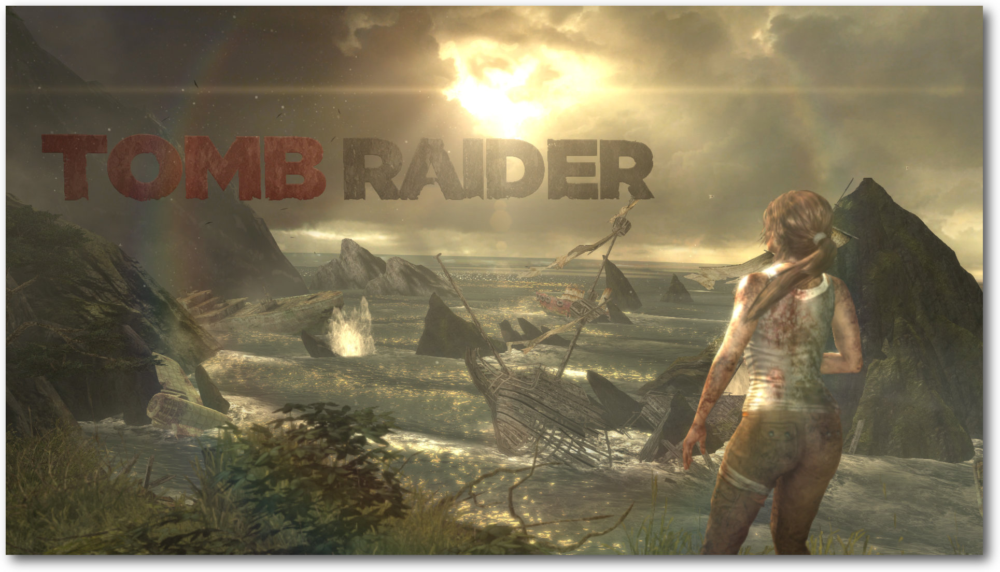„Tomb Raider“ im neuen Gewand.
Tod, überall Tod
Leichen, überall Leichen. Sie stapeln sich in den Ecken, liegen auf dem Boden oder hängen von der Decke herunter. Die nackten und zerborstenen Knochen lassen keine Zweifel daran entstehen, dass die Opfer kein leichtes Ableben hatten. Überall Blut und Gedärme. Ein ekelerregender Anblick und mittendrin Lara Croft – kopfüber hängend von der Decke. Langsam kommen auch die Erinnerungen der letzten Stunden zurück. Schiff, Untergang, Rettung und schlussendlich dieser Schlag. Und nun dieser unmenschliche und brutale Gestank, gepaart mit Ekel und Angst. Es sind keine zehn Minuten vergangen, in denen sich zeigt, aus welchem Holz der Neustart der Serie geschnitzt ist. Der feuchte Traum vieler Teenager musste einem Albtraum weichen. Denn in „Tomb Raider“ gibt es keine Helden mehr, sondern nur noch eine Überlebende. Dieser Ansatz scheint auf den ersten Blick vielleicht übertrieben, aber mit jeder Minute des Spieleklassikers wird klar, wie radikal das Team das Spiel umgebaut hat. Das erste Action-Adventure der Reihe setzte zweifelsohne neue Standards und katapultierte Lara Croft gleichsam auf die Titelseiten der Spielemagazine. Zwar wandelte sich die Figur im Laufe der Zeit zart Richtung eines menschlichen Wesens. In Wahrheit war sie aber eine Amazone mit übermenschlichen Kräften, die nur der legendäre Chuck Norris in die Knie zwingen könnte. Wenn überhaupt. 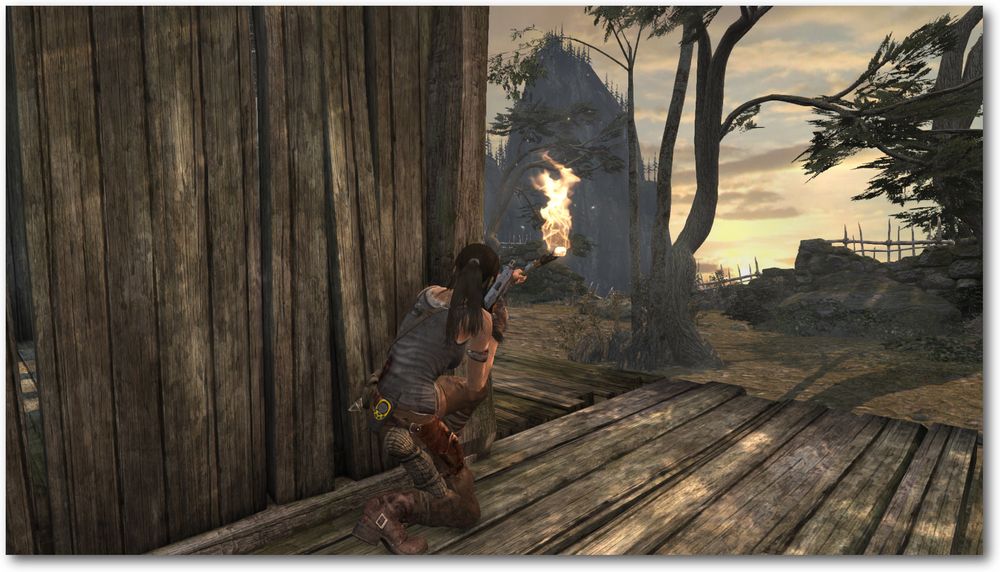In Deckung gehen ist besser als ein Frontalangriff.
Die Wandlung
Die Lara im neuen Tomb Raider ist jung und von den zahlreichen Abenteuern der vergangenen Titel noch weit entfernt. Innerhalb von ein paar Minuten wird die Spielheldin in das Geschehen geworfen und muss lernen, dass Archäologie mitunter mit Schmerzen – vielen Schmerzen – verbunden sein kann. Um zu überleben, muss Lara Croft zunächst die Flora und Fauna dezimieren. Doch schon bald lernt sie, dass auch die Menschen ihr und ihren Freunden nicht wohlgesonnen sind. Fortan heißt es einfach nur noch vorwärts. Von den Geschehnissen getrieben und in einem rasanten Tempo springt Croft über Klippen, klettert Felsvorsprünge hoch und wehrt sich gegen allerlei Angreifer. In geskripteten Sequenzen muss sie ihr Können unter Beweis stellen und mit jeder Herausforderung wandelt sich die unerfahrene, ja fast schon zerbrechliche Lara in eine Heroine, die einem Angreifer die Schläfe wegballert. Die Wandlung vom Start zum Ende hin geschieht dabei sehr ruhig, fast schon subtil und Lara bleibt stets ein Mensch, dessen Handlungen nachvollziehbar sind. 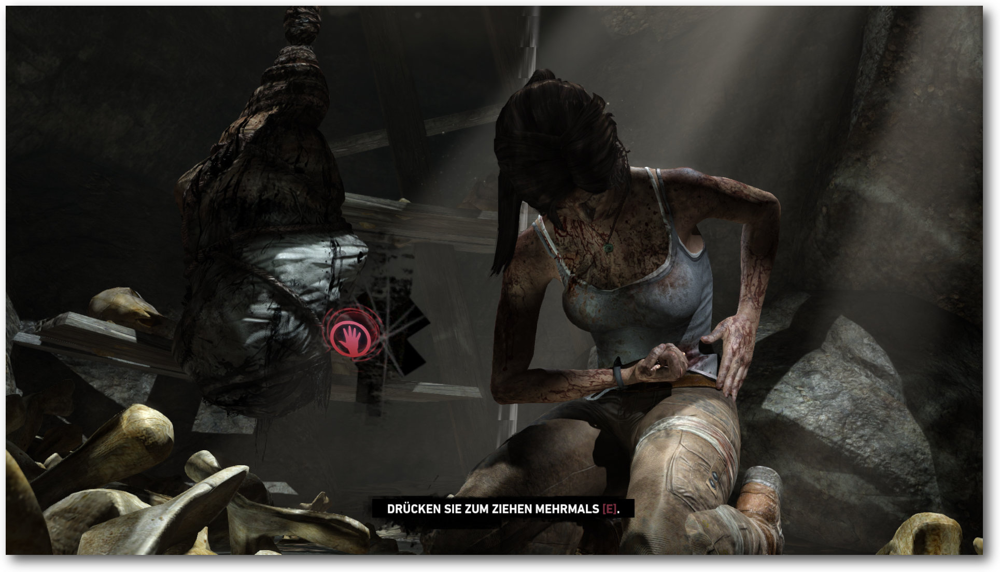In geskripteten Aktionen wird es oftmals repetitiv.
Schnelle Action und schmale Flure
Das Spielgeschehen ist dabei rasant inszeniert. Wenn Lara einem herunterfallenden Flugzeug entkommen muss oder über die Dächer eines einstürzenden Hangdorfes springt, bleibt kein Action-Herz ruhig. Hier wäre aber eines der wenigen Mankos, denn abgesehen vom gelegentlichen Knöpfchendrücken wird dem Spieler während der cineastischen Inszenierung oftmals kaum etwas abverlangt. Das geht mitunter so weit, dass er vor schierer Grafik- und Filmpracht das Drücken gar vergisst und Lara unbeabsichtigt das Zeitliche segnet. Anderseits aber können missglückte, repetitive Versuche, eine Action-Sequenz zu meistern, durchaus an die Substanz gehen, wenn sie gefühlt schon zum tausendsten Mal wiederholt werden muss, weil Laras lebloser Körper schon wieder an einem Baum hängt. Da gibt es allerdings auch die anderen Momente, in der freien Welt zum Beispiel, in der die Action dem Schleichen oder der Lösung von Rätseln weichen muss. Das Ergebnis ist ein motivierender Erkundungstrip. Die Suche nach versteckten Gräbern, das Erkunden der Außenareale oder die Lösung von Rätseln machen einen Heidenspaß. Dabei erfährt der Spieler fast nebenbei die Hintergrundgeschichte und lernt die Zusammenhänge kennen. Doch auch die dadurch generierten Erfahrungspunkte sind nicht ohne, erlauben sie doch die Verbesserung der Ausrüstung oder der Fähigkeiten. Während Lara anfänglich nur leidlich mit einem Bogen umzugehen weiß, erweitert sie sukzessive das Arsenal, verbessert gefundene Waffen und lernt neue Gimmicks kennen. Das führt mitunter dazu, dass der Spieler an bereits erkundete Orte zurückkehrt, um dort beispielsweise ein liegen gelassenes Rätsel zu lösen. Dank des Schnellreisesystems halten sich auch die nötigen Laufwege glücklicherweise in Grenzen. 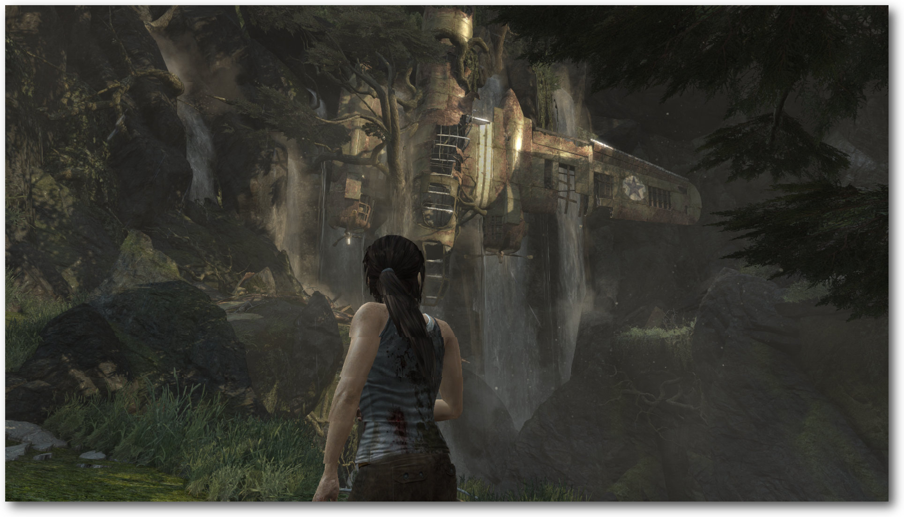In das abgestürzte Flugzeug kann man klettern.
Rennschleichlösespringspiel
Lara bewegt sich in der Welt relativ unkompliziert, springt elegant über Felsvorsprünge, klettert Hänge hoch oder versucht beim Fallen diversen Gegenständen auszuweichen. Die Steuerung ist präzise und die Aktionen sind selten unfair. Die Insel selbst ist allerdings nicht frei erkundbar, sondern in verschiedene Bereiche unterteilt. Diese zu erreichen erfordert manchmal den Marsch durch ein Labyrinth von Schlauchleveln. Die freien Areale entschädigen aber. Sie sind nicht selten groß genug, um darin zahlreiche Herausforderungen und Rätsel zu verstecken. Denn Rätsel sind das, was man erwartet. Gerade diese „Ich sehe einen Gegenstand, wie komme ich aber hin“-Momente machen den Reiz des Spiels aus. In den optionalen Gräbern zieht der Schwierigkeitsgrad noch ein Mal ein wenig an. Eine große Hilfe ist dabei der sogenannte Überlebensmodus, der die Welt in einen Grauschleier taucht und integrierbare Objekte hervorhebt. Wie wichtig das Lösen und das Suchen in „Tomb Raider“ ist, sieht man alleine schon an den Belohnungen, die selten für die Erfüllung von Aufträgen, dafür aber für die Lösung von Rätseln vergeben werden. Deswegen auch kehrt man an den Schauplatz bereits abgeschlossener Bereiche zurück. „Da war doch noch diese eine Kapsel, die noch gefunden werden wollte“, ist nicht selten der Gedanke dahinter. Wer dazu keine Lust hat, folgt einfach dem Spiel und lässt sich im Zuge der Kampagne vom Spielgeschehen treiben. Wem das Single-Dasein zu langweilig ist, kann in einer Multiplayerpartie mit oder gegen andere antreten. Das kann durchaus Spaß machen, wenn man auf Aktion im Stile Counter Strike steht. 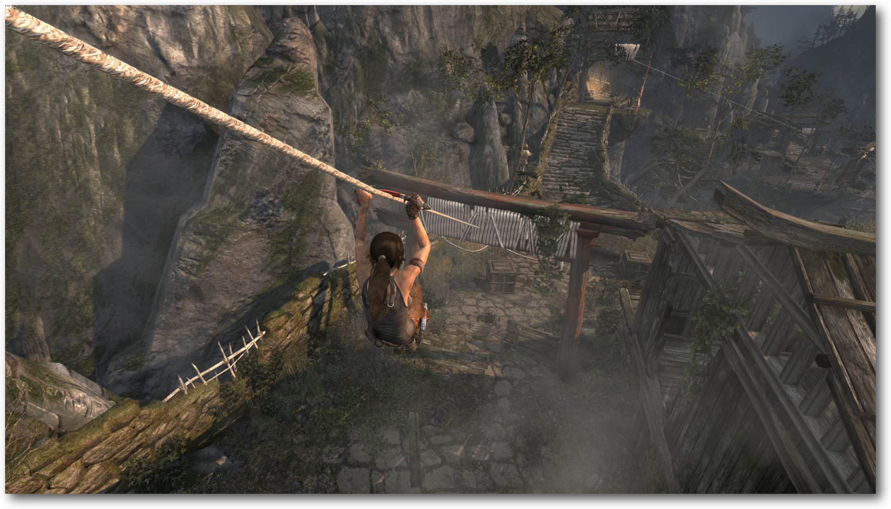Rutschpartie.
Technik
Bereits 2013 kam „Tomb Raider“ auf dem Markt. Nun ist das Spiel seit ein paar Wochen auch für Linux verfügbar. Doch auch drei Jahre später sieht Laras Pixelwelt immer noch sehr gut aus. Vor allem die Darstellung der Schatten fällt enorm detailliert und realistisch aus. Die atemberaubenden Panoramen und die spektakuläre Weitsicht laden zudem auch unter Linux zum Erkunden ein. In dicht bewaldeten Gebieten generiert die Engine sehenswerte Licht- und Schattenspiele und in nassen Wäldern eine beängstigende, trübe Stimmung. Richtig klasse sieht zudem Laras animierte Haarpracht aus – jedenfalls bei aktiviertem TressFX. Das geht allerdings an die Substanz des Systems und verlangsamt die Grafikausgabe teils erheblich. Die akustische Untermalung kann ebenso überzeugen. Sowohl der Soundtrack als auch die Hintergrundgeräusche und die Synchronisation sind mehr als gelungen. Vor allem die Leistung von Nora Tschirner (Keinohrhasen), die in der deutschen Synchronversion der Hauptfigur ihre Stimme leiht, fällt positiv auf. Sie ist es, die Lara eine Authentizität jenseits eines Spieleklischees verleiht. Eine weitere Auffälligkeit stellt die Kamera dar, die Tschirners Arbeit noch verstärkt. Das Bild ist nicht nur Mittel zum visuellen Transport, sondern auch dedizierter Träger von Emotionen. Der Preis für die Authentizität sind die recht hohen Systemvoraussetzungen. Wer kein einigermaßen aktuelles System besitzt, wird keinen Spaß an dem Spiel haben. Laut Aussage des Herstellers benötigt das Spiel mindestens eine NVIDIA GeForce 640 und 4 GB RAM. Wer die volle Pracht der Grafik erfahren will, sollte freilich ein weitaus schnelleres System besitzen. 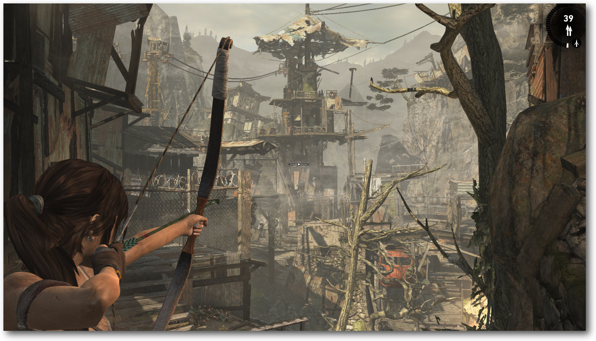Auch mit Pfeil und Bogen kann Lara umgehen.
Fazit
So endet das vorerst letzte Kapitel von „Tomb Raider“ unter Linux. Das alte Spiel schrieb Geschichte und nun gilt es aus einer neuen, frischen Perspektive zu erzählen. Wie alle wichtigen Neustarts hat man auch bei dieser Serie sich nicht nur des Inhalts, sondern auch der Figur angenommen und ihr eine Frischzellenkur spendiert. Nicht jeder wird es mögen. Ich tue es. Die Aktion, die schnellen Schnitte und das Blut haben Lara aus der Asche der alten Titel wieder auferstehen lassen. Die Heldin ist erwachsen geworden, indem sie jünger wurde. Sie ist wieder unter den Menschen angekommen – verletzlich, verletzt und um eine neue Erfahrung reicher. Passé sind die Zeiten der Pin-Up-Posen. Lara 2.0 ist da und mit ihr ein Spiel, das unterhalten kann, auch wenn es die Grenzen des Erträglichen nicht selten auslotet und einen durch banale Brutalität oftmals sprachlos zurücklässt. Die neue Welt von Lara ist kein zweidimensionales Puzzle mehr, sondern eine gefährliche Manege einer Heroine, deren Überleben es zu sichern gilt. Doch ist die Welt sehens- und spielenswert? Ja! Links[1] https://www.feralinteractive.com/de/mac-games/tombraider/
[2] http://www.pro-linux.de/artikel/2/1830/tomb-raider.html
Autoreninformation |
| Mirko Lindner (Webseite) befasst sich seit 1990 mit Unix. Seit 1998 ist er aktiv in die Entwicklung des Kernels eingebunden und verantwortlich für diverse Treiber und Subsysteme für Linux und andere freie Plattformen. Daneben ist er einer der Betreiber von Pro-Linux.de. |
Beitrag teilen Beitrag kommentieren
Zum Inhaltsverzeichnis
Vortasten mit Emacs-Lisp
von Clemens Radermacher Im Artikel „Emacs – Moderne Antike“ (freiesMagazin 04/2016 [1]) wurden bereits einige Vorzüge von Emacs vorgestellt. Ein besonderes Merkmal von Emacs ist, dass es sich um einen Editor handelt der in einen Interpreter eingebettet ist. Dies lässt es zu Emacs sogar während seiner Ausführung beinahe nach Belieben anzupassen. Um dieses Potential nutzen zu können, ist es wichtig sich mit den Grundzügen der programminternen Sprache Emacs Lisp, sowie mit den teilweise ungewohnten Begriffen und Konzepten von Emacs vertraut zu machen. Das Ändern von Tastenbelegungen ist ein guter Einstieg sich darin zu üben und Thema dieses Artikels. Durch die Vielfalt von Emacs kann man am Anfang leicht den Überblick verlieren. Sobald man sich etwas mit den Eigenheiten der Emacs-Welt und der Sprache Emacs Lisp vertraut gemacht hat, merkt man aber, dass die Entwickler die Schnittstellen sowie das Programm selbst gut strukturiert haben.Jargon und Grundlagen
Ein Begriff, über den man zu Beginn relativ schnell stolpert, ist der des „Buffers“. Ein Buffer entspricht augenscheinlich dem, was in anderen Programmen als Tab bezeichnet wird. Ein Emacs-Buffer ist aber auch eine Datenstruktur, in der die angezeigten Inhalte mit der Hilfe von Emacs-Lisp weiterverarbeitet werden können. Das ist aber für den Anfang weniger von Bedeutung. Wichtiger ist zunächst das Konzept, dass ein Buffer eine Art separierte Umgebung in Emacs bereitstellt. In dieser Umgebung können Einstellungen gesetzt werden, die dann speziell für diesen Buffer gelten. Dazu gehören z. B. Definitionen für spezifische Tastenbelegungen, aber auch viele weitere Einstellungen, die beeinflussen, wie die Daten von Emacs in einem Buffer dargestellt und interpretiert werden. Jeder Buffer befindet sich immer in einem sogenannten „Major-Mode“. Diese Major-Modes bestimmen die grundsätzlichen Eigenschaften eines Buffers und werden abhängig vom Verwendungszweck des Buffers gewählt. In einem Buffer kann zu einem Zeitpunkt immer nur ein einziger Major-Mode aktiv sein. Den Major-Mode wählt Emacs abhängig von dem Dateityp einer zu öffnenden Datei oder aufgrund gewisser Regeln, die man natürlich beliebig anpassen kann. Man hat auch immer die Möglichkeit, den Major-Mode eines Buffers manuell durch die Ausführung des entsprechenden Mode-Befehls zu ändern. Zur besseren Veranschaulichung betrachten wir ein Beispiel. Wenn man z. B. eine Datei mit der Erweiterung „.py“ öffnet, wird dann für den Buffer automatisch der Python-Mode aktiviert. Wenn man jetzt anfängt, gültigen Pythoncode zu schreiben, wird dieser entsprechend farbig markiert und man kann beispielsweise mit „Strg“ + „c“ „Strg“ + „c“ den Code an einen Python Interpreter schicken. Durch Drücken der Tasten „Alt“ + „x“ und anschließender Eingabe des Befehls text-mode verliert man nun sämtliche Features des Python-Modes und alles verhält sich so, als wenn man eine normale Textdatei in Emacs geöffnet hätte. Neben dem Major-Mode kann jeder Buffer zusätzlich eine beliebige Anzahl von Minor-modes aktivieren, welche den Buffer um zusätzliche Features erweitern. Dabei handelt es sich oft um Features, die generell nützlich sind, also weniger abhängig von dem Verwendungszweck eines Buffers sind als der Major-Mode. Ein Beispiel ist der „Electric-Pair-Mode“, welcher unter anderem das Einfügen von geschlossenen Klammern automatisiert, wie man es auch von vielen anderen Code-Editoren kennt. Sowohl Major- als auch Minor-Modes können festlegen, was beim Drücken einer Taste geschehen soll. Zusätzlich gibt es Tastenzuweisungen, die global gesetzt werden sowie noch einige weitere Mechanismen, die in den von Emacs intern verwendeten Objekten des Buffertextes selbst definiert werden. Diese ermöglichen beispielsweise klickbare Links in Buffern. Welche Tastenzuweisung sich bei konkurrierenden Definitionen durchsetzt, ist durch eine Hierarchie von sogenannten „Keymaps“ geregelt [2] [3]. Diese Keymaps werden nach dem Drücken einer Taste in einer bestimmten Reihenfolge durchsucht, bis Emacs in einer dieser Maps fündig wird. Für den Anfang sind die Keymaps, welche in den Textobjekten selbst definiert werden, weniger interessant. Allerdings ist es gut zu wissen, dass es sie gibt, und dass sie von der Priorität her sogar höher liegen als die Keymaps der minor-modes. Die Keymaps von Minor-Modes überlagern hingegen wiederum die lokale Keymap eines Buffers, welche normalerweise durch den Major-Mode festgelegt wird. Nachdem alle diese Keymaps durchsucht wurden, gibt es noch die Global-Map, welche die letzte Keymap ist, welche nach Zuweisungen von Tasten durchsucht wird. Mit diesem Hintergrundwissen kann man anfangen, sich in die Praxis zu begeben und lernen, wie man mit etwas Emacs Lisp Code die Tastenbelegungen anpassen kann.Die ersten Schritte
Die Standard-Tastenbelegungen haben Emacs nicht ganz zu Unrecht einen gewissen Ruf eingebracht und hin und wieder denkt man, dass EMACS tatsächlich für Escape-Meta-Control-Shift stehen könnte. Wer keine Tentakel [4] besitzt, erfährt aber im Folgenden, wie man die Tastenbelegungen nach Belieben an seine eigenen Bedürfnisse anpassen kann. Die Tastenbelegung im aktuellen Buffer lässt sich durch Drücken der Tasten „Strg“ + „h“ „k“ ermitteln. Darauf erscheint ein Prompt, der nun wiederum das Drücken einer Taste oder auch einer Tastenkombination erwartet. Hier könnte man zum Beispiel erneut „Strg“ + „h“ „k“ eingeben. Dann erfährt man mehr über die Funktion, die man gerade mit diesen Tasten aufgerufen hat. Im folgenden Fenster werden die gedrückten Tasten, der Name der Funktion und ihre Dokumentation sowie ein Link zum Quellcode der Funktion angegeben. 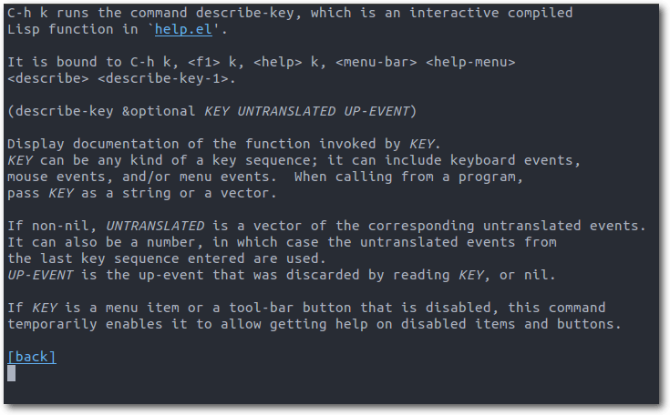Erklärung zur Funktion, die man soeben aufgerufen hat, in diesem Fall über die Tastenkombination „Strg“ + „h“ „k“.
Globale Tastenbelegungen, das heißt Zuweisungen, die in allen Buffern unabhängig vom gerade aktiven Major-Mode gelten sollen, lassen sich am einfachsten konfigurieren. In Emacs-Lisp werden wie in allen Lisp-Sprachen zum Aufrufen von Funktionen immer einige Klammern benötigt. Daran gewöhnt man sich aber nach einiger Zeit:
(global-set-key (kbd "<f1>") (quote info))
;;^--Funktion--^ ^1.Argument^ ^2.Argument^
;; alternativ zu (quote info) geht auch die Kurzform 'info:
(global-set-key (kbd "<f1>") 'info)
Die Funktion global-set-key sorgt dafür, dass die Tastenzuweisung in der
bereits erwähnten Global-Map definiert wird und damit in allen Buffern gilt,
die die Taste „F1“ nicht durch andere Keymaps überlagern. Mit kbd wird der
String <f1> in eine Emacs-interne Datenstruktur übersetzt, die für die Taste
„F1“ steht. Der Befehl info ist das zugewiesene Kommando. Kommandos sind
alle Funktionen, die interaktiv sind, d. h. die über den „Alt“ + „x“ Prompt zu
erreichen sind.
Nur Kommandos lassen sich Tasten zuweisen, alle anderen Funktionen sind nur durch
Emacs-Lisp-Code aufrufbar. Ob es sich bei einer Funktion um ein Kommando
handelt, erfährt man z. B. auch im ersten Satz der Beschreibung zu einer Funktion
durch den Hinweis, dass es sich um eine interaktive Funktion handelt. Die
spezielle Funktion quote gibt schließlich das Symbol info zurück, also
den Namen des Kommandos, das wir zuweisen möchten.
Das „Quoting“ bereitet am Anfang oft Kopfzerbrechen. Es wird verständlicher,
sobald man weiß, dass jede Funktion ihre Argumente vor ihrem Aufruf aufzulösen
versucht. Das bedeutet, dass alle Argumente einer Funktion, die nicht „gequoted“ sind
und nicht bereits ein gültiges Emacs-Lisp-Objekt darstellen (wie z. B. Zahlen
oder Strings),
als Namen von Variablen interpretiert werden. Emacs versucht
dann, den Wert der Variablen zu ermitteln. Das bedeutet aber auch, wenn keine Variable
namens info existiert, dann führt die Ausführung des folgenden Befehls zu
einem Fehler:
;;^--Funktion--^ ^1.Argument^ ^2.Argument^
;; alternativ zu (quote info) geht auch die Kurzform 'info:
(global-set-key (kbd "<f1>") 'info)
(global-set-key (kbd "<f1>") info) ;; >> Error: void-variable info
Der Interpreter kann nicht automatisch erkennen, dass mit info eine
Funktion gemeint ist, da in Emacs-Lisp im Gegensatz zu den
gängigeren Programmiersprachen Variablen und Funktionen denselben Namen
besitzen können. Das bedeutet, es kann sowohl eine Variable als auch eine
Funktion mit dem Namen info existieren. Hier muss man dem Interpreter
seine Absichten mitteilen.
Möchte man verhindern, dass der Interpreter nach einer Variablen mit dem Namen
info sucht, muss man das quote Konstrukt verwenden. Als Kurzform lässt
sich, wie im Beispiel oben gezeigt, auch die Abkürzung 'info nutzen.
Das Format, welches in dem String für die Tastenkombination benötigt wird,
lässt sich am einfachsten über die im vorherigen Abschnitt beschriebene
Hilfefunktion durch Drücken der Tasten „Strg“ + „h“ „k“ ermitteln. In dem
Hilfe-Fenster wird gleich zu Beginn das Format des Tastenstrings angegeben.
Grundsätzlich gilt, dass Funktions- und Pfeiltasten mit „<“ und „>“ zu
umschließen sind. Steuerung wird mit „C“ für Control und die Alt-Taste mit
einem „M“ für Meta dargestellt [5]
Mode-spezifische Tasten
Wie bereits erwähnt speichern Modes ihre Zuweisungen von Tasten in sogenannten Keymaps. Die Funktion global-set-key aus dem letzten Abschnitt speichert Tastenzuweisungen in der Global-Map. Möchte man die Zuweisung in einer anderen Keymap hinterlegen, benötigt man zunächst ihren Namen. Diesen zu finden gestaltet sich manchmal etwas schwierig, aber ab dem Emacs Release (Version 25) wird die Keymap in der Beschreibung zu einer Funktion („Strg“ + „h“ „k“) mit angezeigt. In der aktuellen Version Emacs 24.5 muss man diese jedoch noch manuell ermitteln. Oft kommt man aber mit dem Wissen über die Namenskonventionen aus. Die meisten Modes hinterlegen die Tastenzuweisungen nämlich in einer Variablen, die nach dem Mode benannt wird und mit „-map“ endet. Für den relativ bekannten „Org-Mode“ lautet der Name der entsprechenden Keymap beispielsweise „org-mode-map“. Ein umfangreicher Major-Mode wie Org-Mode definiert neben der konventionellen Keymap aber noch weitere. Um in schwierigeren Fällen den Namen der Keymap zu ermitteln gibt es dann mehrere Möglichkeiten. Entweder man such mit „Alt“ + „x“ apropos-variable z. B. unter Verwendung des regulären Ausdrucks org.*map$ nach passenden Kandidaten oder aber man verwendet eine Autovervollständigung wie ido oder helm mit der sich mit „Strg“ + „h“ „v“ bequem nach passenden Namen suchen lässt. Schließlich bleibt auch immer die Möglichkeit, dem Link zu dem Quellcode eines Kommandos zu folgen, um dort nach den verwendeten Keymaps zu suchen. Nachdem man den Namen der Keymap kennt, kann man die entsprechende Elisp-Anweisungen in seiner Initialisierungsdatei hinterlegen. Dabei ist zu beachten, dass viele Keymaps während des Starts von Emacs noch nicht geladen sind. Zum Beispiel ist „org-mode-map“ erst verfügbar, nachdem Org-Mode das erste Mal aktiviert wurde. Dies geschieht erst, nachdem man beispielsweise zuvor eine Datei mit der Endung „.org“ in Emacs geöffnet hat oder man manuell für den Aufruf von org-mode gesorgt hat. In Emacs-Lisp ist es möglich, die Ausführung von Anweisungen zu verzögern und so den Code beispielsweise erst nach dem Laden eines bestimmten Paketes ausführen lassen. Um zum Beispiel mit der Taste „F1“ im Org-Mode das Org-Manual aufzurufen, kann man Folgendes in seiner Initialisierungsdatei verwenden:
;; diese Anweisung stellt sicher, dass die define-key Anweisung erst
;; nach dem Laden von org-mode ausgeführt wird, also nachdem die
;; Variable org-mode-map auch verfügbar ist.
(with-eval-after-load 'org
(define-key org-mode-map (kbd "<f1>") 'org-info))
Den Symbolnamen für das Paket (hier org) kann man ebenfalls der Beschreibung
eines Kommandos entnehmen. Der Symbolname ist normalerweise der gleiche wie der
Name der Quelldatei, nur ohne die „.el“ Endung. Im Netz finden sich oft
Beispiele, die „hooks“ verwenden um Tastenbelegungen zu definieren. Die bessere
Methode ist aber die oben gezeigte, da die Anweisung auf diese Weise nur
einmal, nämlich nach dem Laden von Org-Mode, ausgeführt wird.
Die Anweisung define-key ist die essentielle Funktion für Tastenzuweisungen
in Emacs. Auch die im vorigen Abschnitt verwendete Funktion global-set-key
nutzt diese intern, um die Tasten in der Global-Map zu setzen.
Tastenzuweisungen deaktiviert man, indem man der jeweiligen Taste den Wert nil
zuweist. Wie sein Gegenpart t („True“) gehört es zu den „selfquoting symbols“, d. h.
diese Symbole benötigen ausnahmsweise keine quote Anweisung.
;; nach dem Laden von org-mode ausgeführt wird, also nachdem die
;; Variable org-mode-map auch verfügbar ist.
(with-eval-after-load 'org
(define-key org-mode-map (kbd "<f1>") 'org-info))
(define-key org-mode-map (kbd "<f1>") nil)
Wer jetzt noch tiefer in die Thematik einsteigen möchte, der kann sich
in den folgenden
aufgeführten Verweisen noch mehr Informationen und einige
nützliche Tricks beschaffen: [6] [7] [8] [9] [10] [11].
Links[1] http://www.freiesmagazin.de/freiesMagazin-2016-04
[2] http://emacs.stackexchange.com/a/654
[3] http://stackoverflow.com/a/34559019
[4] http://earlcolour.deviantart.com/art/emacs-user-at-work-195326745
[5] https://www.emacswiki.org/emacs/EmacsKeyNotation
[6] https://www.masteringemacs.org/article/mastering-key-bindings-emacs
[7] http://endlessparentheses.com/define-context-aware-keys-in-emacs.html
[8] http://stackoverflow.com/a/683575
[9] http://stackoverflow.com/a/5340797
[10] http://oremacs.com/2014/12/31/keymap-arms-race/
[11] https://www.gnu.org/software/emacs/manual/html_node/elisp/Keymaps.html
Autoreninformation |
| Clemens Radermacher nutzt Emacs seit ca. zwei Jahren unter anderem zur Programmierung und arbeitet gerne mit Freier Software. |
Beitrag teilen Beitrag kommentieren
Zum Inhaltsverzeichnis
Audacity 2.1 – Teil II
von Holger Reibold Die Kernfunktion von Audacity ist das Bearbeiten von Tonspuren. Mit den von dem Programm bereitgestellten Funktionen kann man Musikdateien schneiden und verschiedenste Effekte anwenden. In diesem Artikel werden die wichtigsten Bearbeitungsfunktionen von Audacity vorgestellt. Teil I dieser Reihe beschäftigt sich mit der allgeinen Einführung in Audacity und erschien in der JuniausgabefreiesMagazin 06/2016 [1].Auswählen von Tonspuren
Bevor man sich an das Bearbeiten, Kopieren, Schneiden oder die Ausführung anderer Aktionen macht, muss man die gewünschte Tonspur oder den gewünschten Bereich markieren. In diesem Punkt unterscheidet sich Audacity nicht von anderen Programmen wie Textverarbeitungen, Editoren etc. Das Schöne an Audacity: Der Audioeditor bietet vielfältige Möglichkeiten um Spurbereiche, ganze Spuren oder alle Spuren zu markieren. Man kann dabei die Maus, die Tastatur und Menüs verwenden. In der Praxis ist es oft sogar sinnvoll, die verschiedenen Markierungstechniken miteinander zu kombinieren. Das Markieren eines Bereichs in der Tonspur ist einfach:- Zunächst wählt man das Auswahlwerkzeug.
- Dann positioniert man den Cursor in der Spur auf der gewünschten Position, drückt die linke Maustaste und zieht die Maus nach rechts bis an das Ende des vorgesehenen Bereichs.
- Der Bereich ist nun markiert. Das ist leicht an der dunkleren Darstellung der Markierung erkennbar.
- Die Markierung kann man der Zeitleiste entnehmen. Eine Linie mit je einer Pfeilspitze links und rechts zeigt den Anfangs- und Endpunkt sowie die Dauer des gewählten Bereichs an.
- Wenn man nun lediglich den markierten Bereich abspielen will, betätigt man einfach die Play-Taste.
- Man markiert einen alternativen Bereich in der gleichen Tonspur, in einer anderen Spur oder die gesamte aktuelle bzw. eine andere Spur.
- Mit einem Klick in einen freien Bereich des Projektfensters hebt man die Markierung auf. Dabei wird die Markierung im Audioclip entfernt, aber die Markierung in der Zeitleiste bleibt erhalten.
- Man betätigt eine Cursortaste der Tastatur, beispielsweise die Tasten „Pos1“ oder „Ende“. Der Cursor springt dann an den Spuranfang bzw. an das Spurende.
- Man führt den Menübefehl „Bearbeiten -> Auswählen -> Nichts“ aus, um alle bestehenden Markierungen aufzuheben.
- Auch mit „Strg“ + „Umschalt“ + „A“ entfernt man alle Markierungen.
- Man betätigt wahlweise folgende Tastenkombinationen: „Umschalt“ + „Pfeil links“ bzw. „Umschalt“ + „Pfeil rechts“, dann „Umschalt“ + „Pos1“ (oder „Umschalt“ + „J“) bzw. „Umschalt“ + „Ende“ (oder „Umschalt“ + „K“). Es versteht sich von selbst, dass man diese Tastenkombinationen auch nacheinander anwenden kann. Wenn man den Befehl „Umschalt“ + „Pos1“ gefolgt von „Umschalt“ + „Ende“ ausführt, wird die gesamte Spur markiert.
- Über das Menü „Bearbeiten -> Auswählen -> Spuranfang bis Position“ („Umschalt“ + „J“) oder „Bearbeiten -> Auswählen -> Position bis Spurende“ („Umschalt“ + „K“) kann man den Bereich vor bzw. nach der Cursor-Position markieren.
- Man positioniert den Cursor an die Anfangsposition der gewünschten Markierung, zeigt an die Endposition und betätigt die „Umschalt“-Taste in Verbindung mit der linken Maustaste.
Das Bearbeiten-Menü stellt verschiedene Auswahl- und Markierungsmöglichkeiten zur Verfügung.
In der Praxis kommt es häufig vor, dass man Markierungen erweitern oder einschränken möchte. Für die Größenänderung verwendet man die Tastenkombinationen „Umschalt“ + „Pfeil links“ und „Umschalt“ + „Pfeil rechts“, „Umschalt“ + „Pos1“ (oder „Umschalt“ + „J“) und „Umschalt“ + „Ende“ (oder „Umschalt“ + „K“). Man kann die Spurbereiche natürlich auch mithilfe der Maus vergrößern bzw. verkleinern. Um einen Bearbeitungsschritt, einen Effekt oder eine Analysefunktion auf mehrere Spuren anwenden zu können, muss man die Spuren markieren. Dazu markiert man zunächst die erste gewünschte Spur. Dann klickt man bei gedrückt gehaltener „Umschalt“-Taste in einen leeren Bereich des Spurkopfs der weiteren Tonspuren – fertig. Um ein gesamtes Projekt zu markieren, führt man den Menübefehl „Bearbeiten -> Auswählen -> Alles“ bzw. die Tastenkombination „Strg“ + „A“ aus.
Tonspuren kopieren und einfügen
Nachdem man den gewünschten Bereich eines Audio-Tracks markiert hat, geht es in der Regel im nächsten Schritt darum, diesen zu manipulieren. Audacity stellt eine Fülle an Bearbeitungsmöglichkeiten zur Verfügung, angefangen bei einfachen Aktionen wie Ausschneiden und Einfügen, über das Ändern der Lautstärke bis hin zu drastischen Veränderungen wie dem Verzerren oder dem Rückwärtsabspielen – um nur einige Möglichkeiten zu nennen. Eine Grundfunktion ist das Kopieren und Einfügen. Nachdem man einen Bereich markiert hat, kann man diesen ganz einfach mit dem Menübefehl „Bearbeiten -> Kopieren“ in die Zwischenablage kopieren. Alternativ verwendet man die Tastenkombination „Strg“ + „C“. Dabei bleibt die markierte Passage natürlich in der Spur erhalten. Um den Bereich, der sich in der Zwischenablage befindet, in eine neue Spur oder an anderer Stelle in dem Audio-Track einzufügen, positioniert man den Cursor an der gewünschten Position und führt den Menübefehl „Bearbeiten -> Einfügen“ oder die Tastenkombination „Strg“ + „V“ aus. Im Unterschied zu vielen anderen Anwendungen können die Zwischenablagen-Inhalte aus Audacity nur im Audioeditor selbst weiterverwendet werden. Das Bearbeiten-Menü stellt eine weitere praktische Kopierfunktion zur Verfügung. Mit „Bearbeiten -> In neue Tonspur kopieren“ kann man den markierten Bereich in eine neue Spur kopieren, um dort dann beispielsweise mit der Anwendung von Effekten zu experimentieren. 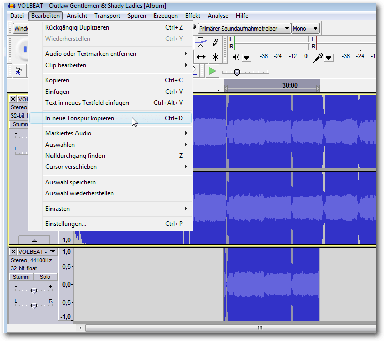Das Kopieren eines markierten Bereichs in eine neue Tonspur.
Ausschneiden, Löschen, Trimmen
Wenn man aus einer Tonspur einen Bereich kopiert, bleibt die Originalspur intakt, doch das ist nicht immer das gewünschte Verhalten. In der Praxis kommt es häufig vor, dass man einen Bereich ausschneiden möchte, um nicht mehr benötigte Bereiche zu entfernen. So könnte man beispielsweise bei einer Sprachaufzeichnung Wiederholungen, Seufzer oder Ähnliches einfach aus der Spur schneiden. Audacity stellt mit dem Menübefehl „Bearbeiten -> Markiertes Audio -> Ausschneiden“ eine schöne Funktion zur Verfügung, um unerwünschte Passagen aus einer Spur zu schneiden. Der Spurbereich rechts des markierten und ausgeschnittenen Bereichs rückt nach links an den ursprünglichen Beginn der Markierung. Schneidet man einen markierten Bereich aus einem zusammenhängenden Clip aus, so schließt der Rest automatisch an den linken Teil an. Je nach Tonspur kann das dazu führen, dass es beim Abhören an dieser Stelle knackst. Aber man kann natürlich auch solche Unsauberkeiten mit Audacity-eigenen Funktionen bereinigen. Schneidet man einen Bereich mit dieser Funktion aus, dann landet dieser in der Zwischenablage und kann wie ein kopierter Bereich behandelt werden. Man können diesen Ausschnitt also in eine bestehende oder in eine neue Spur oder auch in ein anderes Projekt einfügen. Beim Einfügen werden die bestehenden Inhalte überschrieben. Der Audioeditor unterstützt auch das ausdrückliche Löschen eines markierten Bereichs. Die zugehörige Funktion ruft man über „Bearbeiten -> Audio oder Textmarke entfernen -> Löschen“ oder mit „Strg“ + „K“ auf. Der Unterschied zum „normalen“ Ausschneiden: Die markierte Passage wird aus der Audiodatei entfernt, wird aber nicht in die Zwischenablage kopiert. Das bedeutet, dass der Ausschnitt auch nicht an anderer Stelle weiter verarbeitet werden kann. Um zu verhindern, dass beim Ausschneiden der nachfolgende Bereich nach links rückt, verwendet man die Funktion „Bearbeiten -> Audio oder Textmarke entfernen -> Ausschneiden und Clip trennen“. Alternativ kann die Tastenkombination „Strg“ + „Alt“ + „X“ verwendet werden. Durch das Ausschneiden verbleibt im Ausschnittbereich ein „Loch“, das man dann mit anderen Inhalten füllen kann. In dem Untermenü „Markiertes“ findet man weitere interessante Funktionen. Man kann beispielsweise den markierten Bereich entfernen, ohne dass danach ein „Loch“ in der Tonspur bleibt, und diesen Bereich dann in Stille umwandeln. Dazu führt man den Befehl „Bearbeiten -> Audio“ oder „Textmarke entfernen -> Auswahl in Stille umwandeln“ oder die Tastenkombination „Strg“ + „L“ aus.Perfekt schneiden
Das Schneiden ist zweifelsohne eine der wichtigsten Tätigkeiten beim Bearbeiten von Soundmaterial. Natürlich ist beim Schneiden besonders darauf zu achten, dass man den Schnitt an der „richtigen“ Stelle ansetzt, damit weder zu viel abgeschnitten wird, noch zu viel nicht benötigtes Tonmaterial stehenbleibt. So wäre es etwa fatal, wenn man bei einem Interview den Schlusskommentar entfernen würden, dafür aber den Seufzer des Reporters stehen ließe. Bevor man einen Bereich aus einer Tonspur ausschneidet, sollte man sicherstellen, dass es sich dabei auch um den gewünschten Bereich handelt. In der Regel markiert man dazu den Bereich, hört diesen ab, passt gegebenenfalls die Markierung an und entfernen diesen. Die Play-Funktion dient nicht nur dem Abhören, sondern stellt weit mehr Funktionen zur Verfügung, als es auf den ersten Blick scheint. Man benötigt die Wiedergabefunktion, um einen geplanten Schnittbereich abzuhören. Um den geplanten Schnittbereich abzuhören, markiert man einen Bereich der Tonspur und betätigt die Play-Taste. Der Audioeditor spielt daraufhin lediglich den markierten Bereich ab. Dabei beginnt die Cursor-Linie an der linken Pfeilspitze der Markierung in der Zeitleiste und endet an der rechten Pfeilspitze. 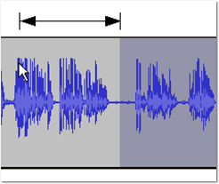Ein Beispiel für die Wiedergabe ab dem Mauszeiger bis zur Markierung.
Mit dieser Vorgehensweise kann man einen Bereich einfach markieren und abhören, ohne die Wiedergabe komplett von Anfang an zu starten. Das ist nicht nur beim Beschneiden von Audiomaterial hilfreich, sondern auch bei jedem anderen Bearbeitungsvorgang. Gerade bei längeren Tonspuren muss man so nicht immer alles von Anfang an hören, bis man die gewünschte Stelle gefunden hat: Man spult einfach vor, markiert die kurze Passage und hört sie ab, spult weiter vor oder wieder zurück – ganz nach Bedarf. Man kann auf diese Weise nicht nur eine einzelne Spur, sondern auch mehrere übereinanderliegende Spuren abhören. Dazu muss man lediglich die Markierung über mehrere Spuren anlegen. Das Abhören eines Bereichs geht einfacher: die Taste „1“ betätigen, um 1 Sekunde abzuspielen. Natürlich will man vor der tatsächlichen Anwendung eines Schnitts nicht nur wissen, wie sich der Schnittbereich anhört, sondern man will auch wissen, wie sich das Dokument ohne den auszuschneidenden Bereich anhört. Audacity stellt hierfür eine Vorkontrolle zur Verfügung, mit denen man das Ergebnis anhören können, bevor man den Schnitt endgültig durchführt. So kann man vorab prüfen, wie sich das Ergebnis anhören würde. Ist man mit dem Ergebnis zufrieden oder hat man den Eindruck, dass man noch die eine oder andere Korrektur durchführen sollte, arbeitet man solange nach, bis man mit dem Ergebnis zufrieden sind. Die Vorgehensweise ist dabei viel einfacher, als man vermuten würde. Man markiert zunächst einen Bereich der Tonspur und betätigt die Taste „C“ auf der Tastatur. Mit dieser Tastenfunktion führt man die Funktion „Schnitt vorhören“ aus. Diese Funktion ist nur über die Tastatur erreichbar. Wenn man die Cursor-Markierung am Bildschirm verfolgt, kann man den Sprung über die markierte Stelle verfolgen. Wichtig bei der Ausführung der „Schnitt vorhören“-Funktion ist, dass man auf der Tastatur das kleine „c“ verwenden. Die „Umschalt“-Taste, die die Großschreibung aktiviert, darf also nicht betätigt sein. Die Tastenkombination „Umschalt“ + „C“ bewirkt vielmehr, dass die aktuelle Spur geschlossen wird. Beim „Schnitt vorhören“ spielt Audacity eine Sekunde vor der linken Schnittmarke und eine Sekunde nach der rechten Schnittmarke ab. Konkret bekommt man also 2 Sekunden der Tonspur zu hören. Mit dieser Funktion kann man genau in die Spur hineinhören und den beabsichtigten Schnitt kontrollieren, etwa ob sich der Schnitt sauber anhört oder ob der Schnitt an dieser Stelle überhaupt sinnvoll ist. Man kann die Länge des Vorlaufs und des Nachlaufs in den Audacity-Einstellungen an die individuellen Bedürfnisse anpassen. Dazu führt man den Befehl „Bearbeiten -> Einstellungen“ aus und öffnet die Kategorie „Wiedergabe“. Unter „Schnitt vorhören“ („c“) gibt man die Sekundenwerte für das Vorhören vor und nach der Auswahl an.
Sprung während der Wiedergabe
Beim Schneiden und Vorhören ist es nicht immer erforderlich, den gesamten Bereich abzuhören. Audacity erlaubt es, während der Wiedergabe Passagen zu überspringen. Dazu betätigt man während der Wiedergabe die Pfeiltasten allein, oder in Verbindung mit der „Umschalt“-Taste:- Pfeiltasten: kurzer Sprung (1 Sekunde)
- „Umschalt“ + Pfeiltasten: großer Sprung (15 Sekunden)
Nulldurchgang finden
Wenn man die ersten Schnitte durchgeführt hat, fallen beim Abhören an der einen oder anderen Schnittstelle Knackgeräusche auf. Diese werden meist durch die harten Schnitte verursacht, aber man kann derlei unschöne Geräusche mit wenig Aufwand verhindern. Beim Schneiden entstehen durch den abrupten Übergang von einem Signal zum anderen gelegentlich Knackgeräusche. Dabei wird die Wellenlinie unterbrochen und setzt neu ein. Wenn man mithilfe der Zoom-Werkzeuge ganz nah heranzoomt, erkennt man, wie die Welle über und unter der Nulllinie verläuft. Zoomt man soweit heran, kann man die einzelnen Markierungen (Punkte), also die einzelnen Samples der Tonspur, auf der Linie erkennen. Um die Knackgeräusche zu verringern bzw. zu vermeiden, sollte man den Schnitt möglichst dort ansetzen, wo die Welle die Null-Linie schneidet, also wo die Welle auf der x-Achse vom positiven in den negativen Bereich oder umgekehrt wechselt. Man bezeichnet eine solche Stelle auch als Nulldurchgang. Das manuelle Heranzoomen und Aufspüren von Nulldurchgängen ist nicht ganz so trivial, wie es auf den ersten Blick anmutet. Man kann allerdings die Arbeit vereinfachen, indem man Audacity die Durchgänge suchen und finden lassen. Dazu führt man einfach aus dem Menü den Befehl „Bearbeiten -> Nulldurchgang finden“ aus oder betätigt die Taste „Z“. Dabei werden die Schnittkanten automatisch angepasst. Womöglich bekommt man nicht einmal etwas von diesem Anpassungsvorgang mit. Aber man kann relativ sicher sein, dass man nichts mehr von den Nulldurchgängen mitbekommen. Dennoch kann es in der Praxis auch einmal vorkommen, dass Audacity in dem markierten Bereich keinen Nulldurchgang findet. In diesem Fall löscht Audacity die Markierung und springt an den nächsten Nulldurchgang. Dieses Verhalten ist nicht unbedingt erwünscht, denn man möchte ja an einer ganz anderen Stelle schneiden. In einem solchen Fall kann man einen Nulldurchgang künstlich erzeugen. Dazu zoomt man wieder in die Spur und fügt an der gewünschten Stelle ein extrem kurzes Ausblenden (Fade-Out) und/oder Einblenden (Fade-In) ein. Durch diese Effekte wird die Wellenlinie derart verändert, dass ein Nulldurchgang entsteht. Die Länge eines Samples ist dabei schon ausreichend.Fazit
Audacity ist ein wahrer Tausendsassa, der eine unglaubliche Vielfalt an Funktionen bereitstellt. Um diese unzähligen Möglichkeiten effektiv nutzen zu können, muss man die Bearbeitungsfunktionen und -möglichkeiten kennen. Erst dann kann man das volle Potenzial des Programms ausschöpfen. Links[1] http://freiesmagazin.de/freiesMagazin-2016-06
Autoreninformation |
| Holger Reibold (Webseite) promovierte in Informatik und begann in den 1990ern seine Karriere als Fachjournalist und Autor. Er veröffentlichte seitdem zahlreiche Artikel und Bücher. 2005 gründete er den Verlag Brain-Media.de. Dort hat er auch ein Buch „Audacity 2.1 kompakt“ mit weiterführenden Informationen zum Audioeditor herausgegeben. |
Beitrag teilen Beitrag kommentieren
Zum Inhaltsverzeichnis
Rezension: Linux Mint – der praktische Einstieg
von Martin Stegmeyer Die richtige Version auswählen, Linux Mint installieren, die Anwendungen kennenlernen und Dateien eines vorhandenen PCs von einem anderen PC übernehmen – all das wird in diesem Buch für Umsteiger auf Linux Mint beschrieben [1]. Redaktioneller Hinweis: Wir danken Rheinwerk für die Bereitstellung eines Rezensionsexemplares.Was steht drin?
Dirk Becker bietet eine Anleitung zum Installieren, Konfigurieren und Benutzen von Linux Mint, einer der beliebtesten Distributionen für den Linux-Desktop. Im ersten Kapitel werden verschiedene Linux-Distributionen und Derivate und grafische Oberflächen vorgestellt. Der eingefleischte Windows- oder Mac-OS-Benutzer dürfte von dieser Vorstellung zunächst etwas verwirrt sein, weil er diese Vielfalt von den ihm vertrauten Systemen nicht kennt. Es hilft aber, sich in der Linux-Landschaft etwas zu orientieren. Im zweiten Kapitel wird es konkreter. Dem Leser werden die möglichen Installationsarten vorgestellt: Linux Mint alleine auf einem PC, parallel zu einem vorhandenen Betriebssystem oder als virtuelle Maschine. Für die zuletzt genannte Methode werden im Schnelldurchgang Installation und Anwendung von VirtualBox erklärt. Nachdem die Hardware-Voraussetzungen geklärt wurden, geht es im nächsten Kapitel mit der Installation weiter. Praktischerweise liegt dem Buch eine DVD mit der 64-Bit-Distribution von Linux Mint bei, aber auch der Download und das Erstellen eines Boot-Mediums werden erläutert. Schritt für Schritt geht es vom Start der Live-DVD über das Partitionieren der Festplatte, die Sprachauswahl etc. bis zum Parallelbetrieb mit Windows 8 und Besonderheiten bei UEFI. In Kapitel 4 wird die Anwendung von Linux im Allgemeinen und Mint im Speziellen behandelt. Die Besonderheiten des Benutzers root, die Installation von Updates und Sprachpaketen werden ebenso erklärt wie die Paketverwaltung und das Verwenden des Dateimanagers sowie das Einrichten von Druckern. In den folgenden Kapiteln wird ein Durchmarsch durch alle möglichen Anwendungen geboten – vom Texteditor über die Shell und LibreOffice bis zu Gimp. Es folgen noch eine Abhandlung über Spiele und die Windows-Emulation sowie Kapitel über Tipps und Tricks.Für wen ist das Buch geeignet?
Der Buchumschlag enthält den Hinweis „keine Vorkenntnisse erforderlich“. Diese Aussage klingt etwas gewagt, und sie wird auch im ersten Kapitel relativiert. Dort heißt es, man sollte durchaus mit PC-Anwendungen wie Text- oder Bildbearbeitung, Webbrowsern und Mailprogrammen auf anderen Betriebssystemen vertraut sein. Wer noch nie von Virtualisierung gehört hat, wird sich mit der Kurzanleitung für VirtualBox schwer tun. Ein ambitionierter Linux-Anwender, der Erfahrung mit Ubuntu, Suse etc. und Gnome oder KDE hat, wird hier nicht viel dazu lernen.Aufbau und Inhalt
Das Buch enthält 9 Kapitel auf 428 Seiten. Das klingt viel, jedoch relativiert sich die Seitenzahl, weil im Schnitt auf jede Seite eine Abbildung in Form eines Screenshots kommt. Das hilft manchmal dem Verständnis und lockert das Layout auf – in vielen Fällen ließe sich jedoch der Inhalt mit wenigen Worten darstellen. Linux Mint gibt es in verschiedenen „Geschmacksrichtungen“: den auf Gnome 2 basierenden Desktop Mate, Cinnamon auf Basis von Gnome 3 sowie XFCE und KDE. Im vorliegenden Buch wird Cinnamon behandelt – die anderen Versionen werden nur am Rande erwähnt. Dirk Becker versucht, Linux Mint „dem typischen Anwender“ nahe zu bringen. Dieser Anwender interessiert sich für Standard-Anwendungen wie Webbrowser, E-Mail, Text- und Tabellenbearbeitung. Dazu kommen Anwendungen zum Ansehen und gelegentlichen Bearbeiten der Urlaubsfotos, das Abspielen von Musik und Videos und eventuell das eine oder andere Spiel. Wer solche Programme schon unter Windows oder Mac OS X kennengelernt hat und die Stolpersteine beim Wechsel zu einem Linux-System schmerzfrei überwinden möchte, findet hier einen guten Leitfaden. Wenn man in einem Buch ein solches Spektrum abdecken möchte, kann man nicht in die Tiefe gehen. Deshalb findet sich oft der Hinweis: „Dieses Thema ist so umfangreich, dass es ein weiteres Buch füllen könnte.“ Redaktioneller Hinweis: Da es schade wäre, wenn das Buch bei Martin Stegmeyer nur im Regal steht, wird es verlost. Die Gewinnfrage lautet: „Wie lautet der Codename von Linux Mint Version 17.1?“ Die Antwort kann bis zum 10. Juli 2016, 23:59 Uhr über die Kommentarfunktion oder per E-Mail anFazit
Der versierte Linux-Anwender erfährt hier nicht viel Neues. Dem Quereinsteiger wird der Weg zu Linux geebnet. Auch wenn viele Themen nicht erschöpfend behandelt werden können, findet man hier Hinweise für weitere Recherchen, um mögliche Hürden beim Umstieg auf Linux Mint zu nehmen.Buchinformationen | |
| Titel | Linux Mint – Der praktische Einstieg [1] |
| Autor | Dirk Becker |
| Verlag | Rheinwerk |
| Umfang | 428 Seiten |
| ISBN | ISBN 978-3-8362-3503-7 |
| Preis | 24,90 € (Print), 21,90 € (E-Book) |
Links
[1] https://www.rheinwerk-verlag.de/linux-mint_3768/
Autoreninformation |
| Martin Stegmeyer befasst sich seit den 90er-Jahren beruflich mit Linux und anderen Betriebssystemen sowie mit Computer-Netzwerken. |
Beitrag teilen Beitrag kommentieren
Zum Inhaltsverzeichnis
Leserbriefe
Für Leserbriefe steht unsere E-MailadresseLeserbriefe und Anmerkungen
Gentoo
-> Die im Artikel über Gentoo [siehe „Linux-Distributionen im Vergleich – eine etwas andere Auswahl“ freiesMagazin 06/2016 [1]] getroffene Aussage: „Die Installation solcher Pakete funktioniert nach dem Hinzufügen eines Overlays etwas anders als die normaler Pakete, weil der emerge-Befehl nicht mit Overlay-Paketen umgehen kann.“ stimmt so nicht. Emerge kann auch mit Paketen aus Overlays umgehen, man muß nur dafür sorgen, daß emerge Kenntnis von den zusätzlichen Overlays hat. Auch hier gibt es verschiedene Möglichkeiten dies zu bewerkstelligen. Zum Einen über [das Verzeichnis] /etc/portage/repos.conf oder die (veraltete aber immer noch funktionierende) Lösung über das tool layman oder die im Artikel genannte Lösung mit eix. Zum Weiteren kann ich [2] empfehlen.Polynomial-C (Kommentar) -> An Polynomial-C: Könntest Du das etwas detaillierter ausführen? Dies ließe sich dann in einer späteren Ausgabe unterbringen, quasi als Gentoo-Update. Müsste jetzt kein vollständiger Artikel sein, mehr so etwas aus der Kategorie „Hacks und How-Tos“. Etwa so: „UPDATE: Repositories mit Overlay-Paketen unter Gentoo einrichten“. Einfach eine kurze Beschreibung, wie Du das [Verzeichnis] repos.conf bearbeitest bzw. wie layman und eix mit Overlay-Paketen funktionieren, eventuelle Unterschiede und Schwierigkeiten, die auftreten. Wäre echt eine Bereicherung, Leute, die speziell mit Gentoo nichts zu tun hatten, sind sicher für jeden Tip dankbar. An die Redaktion: Wenn die Redaktion nichts dagegen hat, wäre eine solche Kategorie doch um umzusetzen, oder? Wären, wie erwähnt, keine vollwertigen Artikel, aber mit Verlinkung zum Originalartikel. Die „Hemmschwelle“ etwas beizutragen wäre vielleicht auch geringer, Überschrift und Inhalt, das war's. Nachbearbeitung würdet Ihr übernehmen, nach Schema F. Wertvolle Ergänzungen gehen sonst leider womöglich unter, gerade wenn jemand aus eigener Praxis etwas beisteuern kann. Bringt ein wenig mehr „original content“, wenn Leute etwas Längeres beizutragen haben, rege Beteiligung vorausgesetzt. Spiesst sich auch nicht mit der „Leserbrief-Ecke“, weil solche Updates/Kurzanleitungen eben ausführlicher als typische Kommentare wären. Ausserdem stehen die Kommentare am Ende der Ausgabe – eine „Update“-Kategorie könnte gleich nach dem Editorial der neuen Ausgabe präsentiert werden, was ja wünschenswert erscheint. Wäre dies diskussionswürdig?
Random (Kommentar) <- Wir haben absolut nichts dagegen, und vieles von dem ließe sich mit den „Kurztipps“ realisieren, die es bereits gibt, siehe z.B. „Kurztipp: Unerwünschte grep-Ausgaben vermeiden“ freiesMagazin 02/2016 [3]. Je nach Länge des Beitrags ließe sich so etwas aber auch gut in den Leserbriefen unterbringen. Wir heißen jeden Beitrag, der thematisch zu uns passt, explizit willkommen, ob das ein Leserbrief, ein Kurztipp oder ein ausgewachsener Artikel ist.
Kai Welke Links
[1] http://www.freiesmagazin.de/freiesMagazin-2016-06
[2] https://wiki.gentoo.org/wiki/Overlay
[3] http://www.freiesmagazin.de/freiesMagazin-2016-02
Die Redaktion behält sich vor, Leserbriefe gegebenenfalls zu kürzen. Redaktionelle Ergänzungen finden sich in eckigen Klammern. Beitrag teilen Beitrag kommentieren
Zum Inhaltsverzeichnis
Veranstaltungskalender
Messen | ||||
| Veranstaltung | Ort | Datum | Eintritt | Link |
| FOSSGIS | Salzburg | 04.07.–06.07.2016 | frei | http://www.fossgis-konferenz.de/ |
| GUADEC | Karlsruhe | 12.08.–14.08.2016 | – | https://2016.guadec.org/ |
| FrOSCon | Sankt Augustin | 20.08.–22.08.2016 | frei | http://www.froscon.de/ |
Vorschau
freiesMagazin erscheint am ersten Sonntag eines Monats. Die August-Ausgabe wird voraussichtlich am 7. August u. a. mit folgenden Themen veröffentlicht:- Audacity 2.1 – Teil 3
Konventionen
An einigen Stellen benutzen wir Sonderzeichen mit einer bestimmten Bedeutung. Diese sind hier zusammengefasst:| $: | Shell-Prompt |
| #: | Prompt einer Root-Shell – Ubuntu-Nutzer können hier auch einfach in einer normalen Shell ein sudo vor die Befehle setzen. |
| ~: | Abkürzung für das eigene Benutzerverzeichnis /home/BENUTZERNAME |
Impressum ISSN 1867-7991
freiesMagazin erscheint als PDF, EPUB und HTML einmal monatlich.Erscheinungsdatum: 3. Juli 2016
Kontakt | |
| Postanschrift | freiesMagazin |
| c/o Dominik Wagenführ | |
| Beethovenstr. 9/1 | |
| 71277 Rutesheim | |
| Webpräsenz | http://www.freiesmagazin.de/ |
|
Autoren dieser Ausgabe | |
| Hans-Joachim Baader | Ubuntu und Kubuntu 16.04 LTS |
| Mirko Lindner | Tomb Raider – Neugeburt einer Heldin |
| Mathias Menzer | Der Juni im Kernelrückblick |
| Clemens Radermacher | Vortasten mit Emacs-Lisp |
| Holger Reibold | Audacity 2.1 – Teil II |
| Martin Stegmeyer | Rezension: Linux Mint – der praktische Einstieg |
|
Redaktion | |
| Dominik Wagenführ (Verantwortlicher Redakteur) | |
| Kai Welke | |
|
Satz und Layout | |
| Benedict Leskovar | Thomas Schwemm |
| Kai Welke | |
|
Korrektur | |
| Frank Brungräber | Vicki Ebeling |
| Stefan Fangmeier | Mathias Menzer |
| Christian Schnell | Karsten Schuldt |
|
Veranstaltungen | |
| Ronny Fischer | |
|
Logo-Design | |
| Arne Weinberg (CC-BY-SA 4.0 Unported) | |
Soweit nicht anders angegeben, stehen alle Artikel, Beiträge und Bilder in freiesMagazin unter der Creative-Commons-Lizenz CC-BY-SA 4.0 International. Das Copyright liegt beim jeweiligen Autor. Die Kommentar- und Empfehlen-Icons wurden von Maren Hachmann erstellt und unterliegen ebenfalls der Creative-Commons-Lizenz CC-BY-SA 4.0 International. freiesMagazin unterliegt als Gesamtwerk der Creative-Commons-Lizenz CC-BY-SA 4.0 Unported mit Ausnahme der Inhalte, die unter einer anderen Lizenz hierin veröffentlicht werden. Das Copyright liegt bei Dominik Wagenführ. Es wird erlaubt, das Werk/die Werke unter den Bestimmungen der Creative-Commons-Lizenz zu kopieren, zu verteilen und/oder zu modifizieren. Die xkcd-Comics stehen separat unter der Creative-Commons-Lizenz CC-BY-NC 2.5 Generic. Das Copyright liegt bei Randall Munroe.
File translated from TEX by TTH, version 4.08.
On 3 Jul 2016, 11:13.